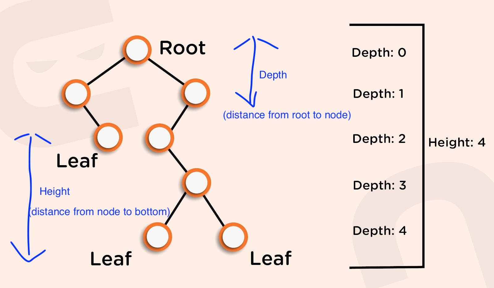
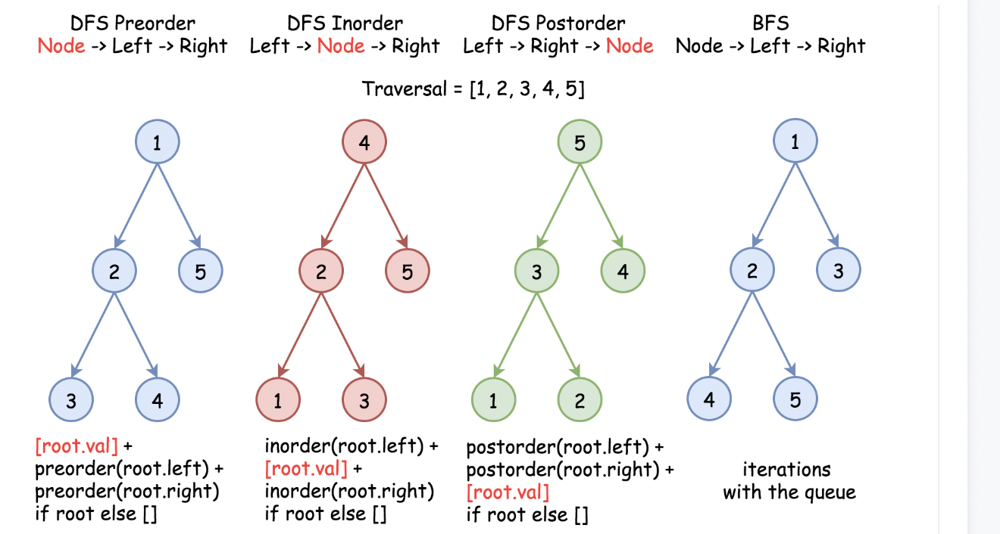

Tree
Last updated: Apr 14, 2026Table of Contents
- Overview
- Key Properties
- Tree Array Representation
- References
- 0) Core Concepts
- 0-1) Tree Types Classification
- 0-2) Common Tree Patterns
- 0-3) Traversal Order Selection Strategy
- 0-4) Traversal Quick-Reference Table (Interview Cheat Sheet)
- 1) Tree Templates & Algorithms
- 1.1) Universal Tree Template
- 1.2) Template Selection Guide
- 1.3) Core Operations
- 1.4) DFS Traversal Templates
- 1.5) Tree Node Initialization
- 2) Problems by Pattern Classification
- 2.1) Problem Categories & Templates
- 2.2) Pattern Selection Guide
- 3) Classic Tree Algorithms
- 3.1) Tree Right Side View (LC 199)
- 3.2) Node Count Algorithms
- 3.3) Delete Nodes And Return Forest (LC 1110)
- 1-1-15) Invert Binary Tree
- 1-1-16) Move Parent Pattern - Bidirectional Tree Traversal
- 1-1-17) check Symmetric Tree
- 1-1-18) Distance Between Nodes
- 1-1-19) Find Paths with Specific Properties
- 1-1-20) Tree Height and Depth Operations
- 1-1-21) Node Path Pattern - Subtree Serialization
- 2) LC Example
- 2-1) Binary Tree Right Side View
- 2-2) Construct String from Binary Tree
- 2-3) Maximum Width of Binary Tree
- 2-4) Construct String from Binary Tree
- 2-5) Closest Leaf in a Binary Tree (Move Parent Pattern)
- 2-7) Same Tree
- 2-9) Validate Binary Search Tree
- 2-10) Construct Binary Tree from Preorder and Inorder Traversal
- 2-11) Construct Binary Tree from String
- 2-12) Minimum Depth of Binary Tree
- 2-13) Maximum Depth of Binary Tree
- 2-14) All Nodes Distance K in Binary Tree
- 2-15) Boundary of Binary Tree
- 2-16) Binary Tree Maximum Path Sum
- 2-17) Build Binary Expression Tree From Infix Expression
- 2-18) Count Good Nodes in Binary Tree
- 2-19) Balanced Binary Tree
- 2-20) Reverse Odd Levels of Binary Tree
- 4) Summary & Quick Reference
- 4.1) Tree Algorithm Complexity Summary
- 4.2) Traversal Quick Reference
- 4.3) Problem-Solving Templates
- 4.4) Common Patterns & Tricks
- 4.5) Common Mistakes & Tips
- 4.6) Interview Tips
- 4.7) Related Topics
Tree Data Structure - Concepts & Patterns
Note: This file covers tree concepts, types, and algorithm patterns. For detailed traversal templates and code examples, see tree2.md.
Overview
Tree is a hierarchical data structure consisting of nodes connected by edges, with one root node and no cycles. Trees are fundamental in computer science for organizing data efficiently.
Key Properties
- Nodes: Elements that store data and references to children
- Root: The topmost node with no parent
- Leaves: Nodes with no children
- Height: Distance from root to deepest leaf
- Depth: Distance from root to a specific node
- Time Complexity: O(log n) for balanced trees, O(n) for unbalanced
- Space Complexity: O(n) for storage, O(h) for recursion depth
Tree Array Representation
Trees can be efficiently represented using arrays, especially for complete binary trees:
# Tree Structure
1
/ \
2 3
/ \
4 5
# Array Representation: [1, 2, 3, 4, 5]
# Index mapping:
# - Root at index 0
# - For node at index i:
# - Left child at index 2*i + 1
# - Right child at index 2*i + 2
# - Parent at index (i-1)/2
References
0) Core Concepts
0-1) Tree Types Classification
Basic Tree Types
| Type | Description | Key Properties | Use Cases |
|---|---|---|---|
| General Tree | Node with any number of children | Flexible structure | File systems, org charts |
| Binary Tree | Each node has ≤ 2 children | Simple structure, recursive | Expression trees, decision trees |
| Complete Binary Tree | All levels filled except possibly last | Efficient array representation | Heaps, priority queues |
| Perfect Binary Tree | All levels completely filled | 2^h - 1 nodes | Theoretical analysis |
| BST | Left < Root < Right ordering | O(log n) search/insert/delete | Search operations, databases |
| Heap | Parent-child ordering property | Fast min/max extraction | Priority queues, sorting |
| Trie | Prefix tree for strings | Efficient string operations | Auto-complete, spell check |
0-2) Common Tree Patterns
Pattern 1: Path-Based Problems
- Use Case: Find max/min values along paths
- Example: LC 1448 (Count Good Nodes) - maintain max value in path
- Technique: Pass accumulated values through DFS parameters
Pattern 2: Subtree Validation
- Use Case: Check properties of subtrees
- Example: LC 101 (Symmetric Tree), LC 98 (Validate BST)
- Technique: Post-order traversal to validate children first
- Reference: Subtree Validation Video
Pattern 3: Height vs Depth Calculations
- Height: Distance from node to deepest leaf (bottom-up)
- Use Post-order traversal (children → parent)
- Calculate after processing subtrees
- Depth: Distance from root to node (top-down)
- Use Pre-order traversal (parent → children)
- Pass down accumulated depth
- Example: LC 104 (Max Depth), LC 111 (Min Depth)
maxDepthcan safely use Math.max() with null children.minDepthneeds this guard, because null doesn’t count as a valid path

Top-Down vs Bottom-Up DFS — Two Strategies for Tree Problems
Reference: MaximumDepthOfBinaryTree.java
Core Distinction:
- Top-down: Pass state down from parent to children via parameters. The answer accumulates during traversal (pre-order position).
- Bottom-up: Collect results up from children to parent via return values. The answer is built after subtrees are solved (post-order position).
Top-Down (Pre-order) Bottom-Up (Post-order)
───────────────────── ──────────────────────
1 ← start here 1 ← combine here
/ \ pass depth=1 / \ return heights
2 3 depth=2 2 3 left=1, right=1
/ \ depth=3 / \ left=2, right=0
4 5 → update global max 4 5 → return max+1
Pattern 1: Top-Down (pass state down, pre-order)
The parent passes accumulated state (depth, path, max-so-far) to children. Typically uses a global variable or output parameter to collect the final answer.
// LC 104 — Top-Down: pass depth down, update global max
// 3 variants: (a) void helper + global var, (b) void helper + depth param, (c) return depth param
// Variant A: void helper + global var (simplest top-down)
int maxDepth = 0;
public int maxDepth_topDown(TreeNode root) {
dfs(root, 1); // start at depth 1
return maxDepth;
}
private void dfs(TreeNode root, int depth) {
if (root == null) return;
// Pre-order position: update answer with current state
maxDepth = Math.max(maxDepth, depth);
// Pass depth+1 DOWN to children
dfs(root.left, depth + 1);
dfs(root.right, depth + 1);
}
// Variant B: return-based top-down (pass depth, return max)
// No global variable needed
private int getMaxDepth(TreeNode root, int depth) {
if (root == null) {
return depth - 1; // went one level too deep
}
int leftDepth = getMaxDepth(root.left, depth + 1);
int rightDepth = getMaxDepth(root.right, depth + 1);
return Math.max(leftDepth, rightDepth);
}
Pattern 2: Bottom-Up (collect results up, post-order)
Each node asks its children for their results, then combines them. The return value carries the answer upward. No global variable needed.
// LC 104 — Bottom-Up: children return their depth, parent adds 1
public int maxDepth_bottomUp(TreeNode root) {
if (root == null) return 0;
// Post-order: solve children FIRST
int leftDepth = maxDepth_bottomUp(root.left);
int rightDepth = maxDepth_bottomUp(root.right);
// Combine: take max of children, add 1 for current node
return 1 + Math.max(leftDepth, rightDepth);
}
Comparison:
| Aspect | Top-Down | Bottom-Up |
|---|---|---|
| Direction | Root → Leaves (pre-order) | Leaves → Root (post-order) |
| State passing | Via parameters (depth, path, max) | Via return values |
| Global variable | Often needed | Usually not needed |
| Return type of helper | Often void |
Returns computed value |
| Mental model | “What do I know so far?” | “What did my children find?” |
| Code simplicity | More verbose (extra params) | More concise |
When to Use Which:
Use TOP-DOWN when:
→ You need to pass parent/ancestor info to children
→ Path tracking: carry path, sum, or max-so-far downward
→ Early termination: can stop when condition met at a node
→ Examples: LC 112 (Path Sum), LC 129 (Sum Root to Leaf),
LC 1448 (Count Good Nodes), LC 257 (Binary Tree Paths)
Use BOTTOM-UP when:
→ Answer depends on BOTH children's results
→ Need to compute subtree properties (height, size, balance)
→ Validation: check property holds for entire subtree
→ Examples: LC 104 (Max Depth), LC 110 (Balanced Tree),
LC 543 (Diameter), LC 124 (Max Path Sum),
LC 236 (LCA), LC 652 (Find Duplicate Subtrees),
LC 968 (Binary Tree Cameras)
LC Problems by Strategy:
| LC # | Problem | Top-Down | Bottom-Up | Notes |
|---|---|---|---|---|
| 104 | Maximum Depth | Yes | Yes | Both work; bottom-up is simpler |
| 111 | Minimum Depth | Yes | Yes | Bottom-up needs null-child guard |
| 110 | Balanced Binary Tree | - | Yes | Must check subtree heights first |
| 112 | Path Sum | Yes | - | Carry remaining sum downward |
| 113 | Path Sum II | Yes | - | Top-down + backtracking |
| 124 | Max Path Sum | - | Yes | Combine left+right at each node |
| 129 | Sum Root to Leaf Numbers | Yes | - | Carry running number downward |
| 236 | Lowest Common Ancestor | - | Yes | Find targets in subtrees first |
| 257 | Binary Tree Paths | Yes | - | Carry path string downward |
| 543 | Diameter of Binary Tree | - | Yes | Track max(left+right) globally |
| 968 | Binary Tree Cameras | - | Yes | Greedy 3-state: 0=uncovered, 1=camera, 2=covered |
| 1448 | Count Good Nodes | Yes | - | Carry max-so-far downward |
Hybrid Pattern: Bottom-Up + Global Variable
Some problems use bottom-up return values to compute subtree info, but also maintain a global variable to track a cross-subtree answer (e.g., diameter, max path sum).
// LC 543 — Diameter: bottom-up height + global max update
int diameter = 0;
public int diameterOfBinaryTree(TreeNode root) {
height(root);
return diameter;
}
private int height(TreeNode root) {
if (root == null) return 0;
int left = height(root.left); // bottom-up: get children's height
int right = height(root.right);
// Global update: diameter passes THROUGH this node
diameter = Math.max(diameter, left + right);
// Return value: height of subtree (for parent to use)
return 1 + Math.max(left, right);
}
Interview Tip:
LC 104 (Max Depth) is the best problem to practice both strategies. Start with bottom-up (3 lines), then rewrite as top-down (global var + void helper). Understanding both unlocks the full tree problem toolkit.
Bottom-Up Greedy with Multi-State (LC 968 Binary Tree Cameras)
Reference: BinaryTreeCameras.java
Some problems require each node to return a state (not a numeric value) to its parent, and the parent makes a greedy decision based on children’s states. This is a distinct bottom-up pattern.
Core Idea — 3-State Greedy:
State 0: NOT covered (needs a camera from parent)
State 1: HAS a camera (covers parent, self, children)
State 2: COVERED (by a child's camera, but has no camera itself)
null nodes → return 2 (covered), so leaves are forced to be state 0 (uncovered),
which forces their parents to place cameras — this is the greedy insight.
Why bottom-up (post-order)?
- Leaves are the most “wasteful” place for cameras (they only cover 1 node upward)
- By processing leaves first, we force cameras onto their parents (which cover 3 nodes)
- This greedy strategy from bottom to top minimizes total cameras
// LC 968 — Binary Tree Cameras: bottom-up greedy with 3 states
int cameraCnt = 0;
public int minCameraCover(TreeNode root) {
// If root itself is uncovered, it needs a camera too
if (dfs(root) == 0) {
cameraCnt++;
}
return cameraCnt;
}
private int dfs(TreeNode node) {
// null = covered (so leaves become uncovered → forces parent to place camera)
if (node == null) return 2;
int left = dfs(node.left); // post-order: solve children first
int right = dfs(node.right);
// Rule 1: Any child uncovered → MUST place camera here
if (left == 0 || right == 0) {
cameraCnt++;
return 1; // has camera
}
// Rule 2: Any child has camera → this node is covered
if (left == 1 || right == 1) {
return 2; // covered
}
// Rule 3: Both children covered (no cameras) → this node is NOT covered
// Rely on parent to cover it (greedy: delay camera placement upward)
return 0; // uncovered
}
Visual — Why greedy works bottom-up:
1 ← if uncovered, add camera here (special root check)
/ \
2 3 ← children covered (state 2), no camera needed
/ \
4 5 ← camera HERE (state 1), covers parent + children
/ \
6 7 ← uncovered (state 0), forces parent to place camera
Processing order (post-order): 6,7 → 4,5 → 2,3 → 1
node 6,7: null children return 2 → both children covered → return 0 (uncovered)
node 4: left=0 (uncovered!) → place camera → return 1
node 5: similar logic
node 2: left=1 (has camera) → return 2 (covered)
node 1: depends on children's states
State transition rules (decision at each node):
| Left State | Right State | Decision | Return |
|---|---|---|---|
| 0 (uncovered) | any | Place camera | 1 |
| any | 0 (uncovered) | Place camera | 1 |
| 1 (camera) | any non-0 | Covered by child | 2 |
| any non-0 | 1 (camera) | Covered by child | 2 |
| 2 (covered) | 2 (covered) | Not covered, rely on parent | 0 |
Key insight — why null → 2 (covered)?
If null returned 0 (uncovered), every leaf would be forced to have a camera — wasteful. By treating null as “covered”, leaves become state 0 (uncovered), forcing their parents to place cameras, which is strictly better (covers 3 nodes vs 1).
Similar LC problems using bottom-up greedy with states:
| LC # | Problem | States | Greedy Insight |
|---|---|---|---|
| 968 | Binary Tree Cameras | 0/1/2 (uncovered/camera/covered) | Delay cameras upward, place at parents of leaves |
| 337 | House Robber III | rob/skip per node | Max(rob current + skip children, skip current + best of children) |
| 979 | Distribute Coins in Binary Tree | excess coins per subtree | Each edge transfer = 1 move; count |
| 1373 | Max Sum BST in Binary Tree | valid/invalid BST + sum | Bottom-up validate BST property + track max sum |
Pattern 4: Tree Construction
- Use Case: Build trees from traversal arrays
- Examples: LC 105 (Preorder + Inorder), LC 106 (Inorder + Postorder)
- Key: Use one array for structure, another for positioning
Pattern 5: Tree Serialization
- Use Case: Convert tree to/from string representation
- Examples: LC 297 (Serialize/Deserialize), LC 449 (BST Codec)
- Techniques: Preorder, postorder, or level-order encoding
Pattern 6: Move Parent (Bidirectional Tree Traversal)
- Use Case: Problems requiring upward traversal or multi-directional exploration
- Core Concept: Convert tree to graph by adding parent pointers
- Key Technique: Build parent map + BFS for distance-based problems
- Example: LC 863 (All Nodes Distance K in Binary Tree)
- Why it works:
- Tree nodes only know children (left/right), not parents
- Build parent map via DFS preprocessing
- Then use BFS to explore all directions: left, right, and up (parent)
- Visited set prevents cycles when parent edges create bidirectional paths
Template Structure:
1. Build parent map (DFS preprocessing)
2. Convert tree to undirected graph (children + parent edges)
3. BFS from target node, exploring all neighbors (left, right, parent)
4. Track visited nodes to avoid cycles
5. Stop at desired distance/condition
Common Applications:
- Finding all nodes at distance K from target
- Closest node to target with specific property
- Path between any two nodes (not necessarily ancestor-descendant)
- Problems requiring “omnidirectional” tree exploration
Pattern 7: Node Path (Subtree Serialization)
- Use Case: Problems requiring subtree comparison, duplicate detection, or structural matching
- Core Concept: Serialize each subtree into a unique string representation for comparison
- Key Technique: Post-order traversal to build serialization strings bottom-up
- Examples: LC 652 (Find Duplicate Subtrees), LC 572 (Subtree of Another Tree)
- Why it works:
- Each unique subtree structure maps to a unique serialization string
- Post-order ensures children are serialized before parent
- String comparison is O(1) with hashing, enabling efficient duplicate detection
- Can use HashMap to track seen subtree patterns
Template Structure:
// Serialize a subtree rooted at 'node' into a unique string
private String getNodePath(TreeNode node) {
if (node == null) {
return "#"; // marker for null children
}
// post-order: left → right → node
String left = getNodePath(node.left);
String right = getNodePath(node.right);
// build serialization string
return node.val + "," + left + "," + right;
}
# Python version
def get_node_path(node):
if not node:
return "#"
# post-order: left → right → node
left = get_node_path(node.left)
right = get_node_path(node.right)
# build serialization string
return f"{node.val},{left},{right}"
Common Applications:
- Finding duplicate subtrees in a binary tree
- Checking if one tree is a subtree of another
- Counting unique subtree structures
- Tree isomorphism problems
- Pattern matching in trees
Key Points:
- Use post-order traversal (children before parent)
- Include null markers (“#”) to distinguish structures
- Use HashMap<String, Integer> to track frequency
- Delimiter (e.g., “,”) prevents ambiguity (e.g., “12” vs “1,2”)
- Time complexity: O(N²) worst case (string building), O(N) with optimization
- Space complexity: O(N) for HashMap and recursion stack
Pattern 8: Node Deletion with State Tracking (DFS + Memoization)
- Use Case: Problems requiring selective node deletion and formation of multiple tree roots
- Core Concept: Track both whether current node should be deleted and whether its parent was deleted
- Key Insight: When a node is deleted, its non-null children become new tree roots
- Example: LC 1110 (Delete Nodes And Return Forest)
- Why it works:
- Two-state tracking:
isDeleted(current node) andisParentDeleted(parent’s status) - A node becomes a forest root if: (1) it’s NOT deleted, AND (2) its parent WAS deleted or doesn’t exist
- Post-order traversal: process children first, then decide whether to keep the node
- Clean disconnection: return null for deleted nodes, automatically severing parent-child links
- Two-state tracking:
Template Structure (DFS + State Tracking):
// Track two states: whether node is deleted, and whether parent was deleted
private TreeNode dfs(TreeNode node, HashSet<Integer> deleteSet, boolean isParentDeleted, List<TreeNode> forest) {
if (node == null) {
return null;
}
boolean isDeleted = deleteSet.contains(node.val);
// If this node is NOT deleted but its parent WAS deleted, it becomes a root
if (!isDeleted && isParentDeleted) {
forest.add(node);
}
// Post-order: process children with current node's delete status
// This status becomes the "isParentDeleted" for children
node.left = dfs(node.left, deleteSet, isDeleted, forest);
node.right = dfs(node.right, deleteSet, isDeleted, forest);
// Return null if deleted (disconnect from parent), otherwise return node
return isDeleted ? null : node;
}
Alternative Template (BFS Approach):
// BFS: disconnect deleted nodes during traversal, collect forest roots
public List<TreeNode> deleteNodes_BFS(TreeNode root, int[] to_delete) {
Set<Integer> deleteSet = new HashSet<>();
for (int val : to_delete) {
deleteSet.add(val);
}
List<TreeNode> forest = new ArrayList<>();
Queue<TreeNode> q = new LinkedList<>();
q.add(root);
while (!q.isEmpty()) {
TreeNode curNode = q.poll();
// Process children: disconnect if they're in delete set
if (curNode.left != null) {
q.add(curNode.left);
if (deleteSet.contains(curNode.left.val)) {
curNode.left = null; // Disconnect
}
}
if (curNode.right != null) {
q.add(curNode.right);
if (deleteSet.contains(curNode.right.val)) {
curNode.right = null; // Disconnect
}
}
// If current node is deleted, its children become roots
if (deleteSet.contains(curNode.val)) {
if (curNode.left != null) {
forest.add(curNode.left);
}
if (curNode.right != null) {
forest.add(curNode.right);
}
}
}
// Add original root if not deleted
if (!deleteSet.contains(root.val)) {
forest.add(root);
}
return forest;
}
Complexity Analysis:
- Time: O(N) - visit each node exactly once
- Space: O(N) - HashSet for delete values, result list, and recursion stack (worst case)
Key Points:
- Two states are critical: knowing if current node is deleted AND if parent is deleted
- Forest root = (node is NOT deleted) AND (parent is deleted OR is root)
- Post-order DFS naturally builds the answer as children are processed first
- BFS approach: disconnect parent-child links immediately when encountered
- Always add root to forest if not deleted (special case since it has no parent)
Common Applications:
- Tree pruning with multiple resulting subtrees
- Forest formation from selective node removal
- File system operations (delete nodes and keep remaining structure)
- Hierarchical data management with cascading deletions
Pattern Recognition:
- ✅ Need to delete specific nodes and keep rest of tree structure
- ✅ Result is a forest (multiple tree roots)
- ✅ Deleted node’s children should survive
- ✅ State depends on both current node and parent’s decision
Similar Problems:
| Problem | LC # | Key Difference |
|---|---|---|
| Delete Nodes And Return Forest | 1110 | Base pattern - delete by value, return remaining roots |
| Delete Leaves With a Given Value | 1325 | Recursive leaf deletion (delete after children) |
| Lowest Common Ancestor III | 1676 | Delete nodes and find LCA in resulting forest |
| Trim a Binary Search Tree | 669 | Keep nodes within range (DFS node filtering) |
0-3) Traversal Order Selection Strategy
When to use which traversal:
1. No specific root processing needed?
→ Any order works (preorder/inorder/postorder)
2. Need parent data for children?
→ Use PREORDER (root → left → right)
3. Need children data for parent?
→ Use POSTORDER (left → right → root)
4. Processing sorted data (BST)?
→ Use INORDER (left → root → right)
5. Level-by-level processing?
→ Use BFS/Level-order traversal
6. Need to move upward (to parent) or explore all directions?
→ Use MOVE PARENT pattern (Build parent map + BFS)
7. Need to compare or identify subtrees?
→ Use NODE PATH pattern (Subtree serialization with post-order)
Pre-order vs Post-order for Leaf Collection (LC 872)
Reference: LeafSimilarTrees.java
When collecting leaf nodes (e.g., LC 872 Leaf-Similar Trees), any DFS order that visits left before right produces the same left-to-right leaf sequence. However, there are practical differences:
Pre-order (recommended for leaf collection):
private void getLeafSeq(TreeNode root, List<Integer> list) {
if (root == null) return;
// Check leaf BEFORE recursing into children
if (root.left == null && root.right == null) {
list.add(root.val);
return; // ← Early exit: skip 2 unnecessary null-child calls
}
getLeafSeq(root.left, list);
getLeafSeq(root.right, list);
}
Post-order (also correct, but slightly wasteful):
private void getLeafSeq(TreeNode root, List<Integer> list) {
if (root == null) return;
getLeafSeq(root.left, list); // ← calls null, returns immediately
getLeafSeq(root.right, list); // ← calls null, returns immediately
// Check leaf AFTER recursing (children were both null)
if (root.left == null && root.right == null) {
list.add(root.val);
}
}
Why both produce the same result: The leaf sequence depends only on left-before-right visitation order, NOT on when the leaf check happens. Since a leaf has no children, post-order’s recursive calls to null return immediately before the leaf check — the leaf is still added in the same left-to-right order.
Why pre-order is preferred:
| Aspect | Pre-order | Post-order |
|---|---|---|
| Leaf sequence | Left → Right | Left → Right (same) |
| Early exit at leaf | Yes (return after adding) |
No (already recursed into null children) |
| Unnecessary null calls per leaf | 0 | 2 |
| Best for | Leaf collection, path building | Height, subtree properties |
Interview answer:
“I chose pre-order because it allows an immediate return once a leaf is identified, avoiding two redundant recursive calls to null children. Any DFS that visits left before right produces the same leaf sequence.”
Related problems where traversal order matters for leaf/path collection:
| LC # | Problem | Recommended Order | Why |
|---|---|---|---|
| 872 | Leaf-Similar Trees | Pre-order | Early exit at leaf |
| 257 | Binary Tree Paths | Pre-order | Build path top-down |
| 112 | Path Sum | Pre-order | Carry remaining sum down |
| 104 | Maximum Depth | Post-order | Need children’s height first |
| 110 | Balanced Binary Tree | Post-order | Validate subtree heights |
0-4) Traversal Quick-Reference Table (Interview Cheat Sheet)
Inspired by LC 113 Path Sum II — key insight: the traversal choice determines the algorithm structure.
| Traversal | Order | Core Use Case | When to Choose |
|---|---|---|---|
| Pre-order | root → left → right | Build path top-down | root-to-leaf paths, carry parent info to children, DFS + backtrack |
| Post-order | left → right → root | Compute subtree results bottom-up | height/depth, subtree sum, max path, DP on trees |
| In-order | left → root → right | Process nodes in sorted order | BST validation, kth smallest, sorted traversal |
| BFS | level by level | Level-by-level processing | min depth, zigzag, right side view, connect next pointer |
Interview Quick-Check Tips
Step 1 — What does the problem ask for?
| Problem asks for… | Use |
|---|---|
| All root-to-leaf paths / path with sum | Pre-order DFS + backtracking |
| Count paths (any start/end) with target sum | Pre-order DFS + prefix sum HashMap |
| Tree height / max depth | Post-order DFS |
| Subtree property (sum, size, max) | Post-order DFS |
| Identify / compare subtrees by structure | Post-order DFS + serialize val,left,right + HashMap |
| Find duplicate subtrees | Post-order DFS + subtree serialization + HashMap count |
| BST sorted order / kth smallest | In-order DFS |
| Validate BST | In-order DFS |
| Level-by-level / min depth | BFS |
| Connect same-level nodes | BFS |
Step 2 — Apply the pattern:
Root-to-leaf path problem?
→ Pre-order DFS + backtracking
→ Pattern: add node → check leaf → recurse → remove node (backtrack)
Path sum from ANY node to ANY node (downward)?
→ Pre-order DFS + prefix sum HashMap (2-sum trick)
→ Pattern: map.put(0,1) → curSum += val → check (curSum-target) in map
→ add to map → recurse → backtrack (decrement map)
Subtree computation (bottom-up)?
→ Post-order DFS
→ Pattern: recurse left, recurse right → combine at current node
Identify or compare subtrees by structure?
→ Post-order DFS + serialize "val,left,right" + HashMap
→ Pattern: serialize(left) + serialize(right) → build key "val,L,R"
→ map.getOrDefault(key,0) == 1 → duplicate! → add to result
→ map.put(key, count+1) → return key to parent
BST / sorted property?
→ In-order DFS
→ Pattern: recurse left → process node → recurse right
Interview Trick (from LC 113):
If the problem asks for “root → leaf path”, it is almost always pre-order DFS + backtracking.
Interview Trick (from LC 437):
If the path does NOT need to start/end at root/leaf and asks for count, use Pre-order DFS + Prefix Sum HashMap (the “2-sum on tree” pattern).
Pre-order DFS + Backtracking Template (Java)
// Template for root-to-leaf path collection (LC 112 / 113 / 257)
void dfs(TreeNode node, int remaining, List<Integer> path, List<List<Integer>> result) {
if (node == null) return;
// 1. Pre-order: add current node FIRST
path.add(node.val);
remaining -= node.val;
// 2. Check leaf condition
if (node.left == null && node.right == null && remaining == 0) {
result.add(new ArrayList<>(path)); // save a COPY
} else {
// 3. Recurse
dfs(node.left, remaining, path, result);
dfs(node.right, remaining, path, result);
}
// 4. Backtrack: remove current node
path.remove(path.size() - 1);
}
Path Update Strategies: Immutable String vs. Mutable List + Backtrack
Two ways to track path state during DFS. Choosing the right one simplifies code significantly.
Strategy 1: Immutable String — pass updated path in the DFS call (no backtrack needed)
The key insight: when you pass path + "->" + node.val directly as an argument, each recursive call gets its own copy of the string. The parent’s path is never modified, so no explicit backtracking is needed.
// LC 257 — Binary Tree Paths (String path, no backtrack)
// Reference: ref_code/interviews-master/leetcode/tree/BinaryTreePaths.java
public List<String> binaryTreePaths(TreeNode root) {
List<String> res = new ArrayList<>();
if (root == null) return res;
dfs(root, String.valueOf(root.val), res);
return res;
}
private void dfs(TreeNode node, String path, List<String> res) {
// 1. Leaf check: path is complete
if (node.left == null && node.right == null) {
res.add(path);
return;
}
// 2. Traverse Left: path update happens INSIDE the DFS call
if (node.left != null) {
/** NOTE !!!
* We do `path update` within DFS call itself.
* path + "->" + node.left.val creates a NEW string,
* so `path` in the current frame is unchanged — no backtrack needed.
*/
dfs(node.left, path + "->" + node.left.val, res);
}
// 3. Traverse Right: same pattern
if (node.right != null) {
/** NOTE !!!
* Same idea: path is NOT mutated here.
* Each branch gets its own copy of the string.
*/
dfs(node.right, path + "->" + node.right.val, res);
}
}
Strategy 2: Mutable List — modify in place, then backtrack
When using a mutable data structure (e.g., List<Integer>), the same object is shared across all recursive calls. You must undo changes after recursion returns.
// LC 113 — Path Sum II (List path, explicit backtrack)
void dfs(TreeNode node, int remaining, List<Integer> path, List<List<Integer>> result) {
if (node == null) return;
path.add(node.val); // ← mutate shared list
remaining -= node.val;
if (node.left == null && node.right == null && remaining == 0) {
result.add(new ArrayList<>(path)); // save a COPY
} else {
dfs(node.left, remaining, path, result);
dfs(node.right, remaining, path, result);
}
path.remove(path.size() - 1); // ← BACKTRACK: undo mutation
}
Comparison:
| Aspect | Immutable String | Mutable List + Backtrack |
|---|---|---|
| Path update location | Inside DFS call argument | Before DFS call |
| Backtrack needed? | No (each call gets own copy) | Yes (must undo mutation) |
| Memory | O(N) new strings per path | O(N) shared, reused list |
| Best for | String paths (LC 257) | Numeric paths (LC 113, 112) |
| Bug risk | Low (no shared state) | Medium (forget to backtrack) |
Rule of thumb:
- Immutable (String, int) → pass updated value in the call → no backtrack
- Mutable (List, StringBuilder) → modify before call → backtrack after call
# Python equivalent — immutable string path (LC 257)
def binaryTreePaths(root):
res = []
def dfs(node, path):
if not node.left and not node.right:
res.append(path)
return
if node.left:
dfs(node.left, path + "->" + str(node.left.val)) # new string, no backtrack
if node.right:
dfs(node.right, path + "->" + str(node.right.val))
if root:
dfs(root, str(root.val))
return res
Pre-order DFS + Prefix Sum HashMap Template (Java)
Used when path can start/end at any node (not just root-to-leaf). Inspired by LC 437 Path Sum III.
Core Idea — “2-Sum on Tree”:
curSum - targetSum = ancestorSum
→ if ancestorSum exists in map, a valid sub-path ends at current node
Why Pre-order?
- Prefix sums must be calculated top-down (pre-order)
- Post-order would calculate subtree sums, not root-to-node prefix sums
// Template: Pre-order DFS + Prefix Sum HashMap (LC 437)
int count = 0;
Map<Long, Integer> prefixMap = new HashMap<>();
int pathSum(TreeNode root, int targetSum) {
prefixMap.put(0L, 1); // base case: empty path has sum 0
dfs(root, 0L, targetSum);
return count;
}
void dfs(TreeNode node, long curSum, int targetSum) {
if (node == null) return;
// 1. Pre-order: update prefix sum with current node
curSum += node.val;
// 2. Check: curSum - targetSum = a previous prefix sum?
// → means a valid sub-path ends here
// (2-sum trick: curSum - ancestorSum = targetSum)
count += prefixMap.getOrDefault(curSum - targetSum, 0);
// 3. Record current prefix sum BEFORE recursing into children
prefixMap.put(curSum, prefixMap.getOrDefault(curSum, 0) + 1);
// 4. Recurse (pre-order: process node before children)
dfs(node.left, curSum, targetSum);
dfs(node.right, curSum, targetSum);
// 5. BACKTRACK: remove curSum so sibling branches are not affected
prefixMap.put(curSum, prefixMap.get(curSum) - 1);
}
Key differences vs. root-to-leaf backtracking:
| Pattern | Path constraint | Data structure | Backtrack what? |
|---|---|---|---|
| DFS + path list + backtrack | Root → leaf only | List<Integer> path |
Remove last element |
| DFS + prefix sum + backtrack | Any node → any node ↓ | Map<Long, Integer> |
Decrement map count |
Post-order DFS + Node Path Serialization Template (Java)
Used when you need to identify or compare subtrees by structure + values. Inspired by LC 652 Find Duplicate Subtrees.
Core Idea — Subtree Fingerprinting:
Serialize each subtree as a unique string: "val,left,right"
→ null nodes become "#" (marker) to preserve tree structure
→ Store in Map<String, Integer> to count occurrences
→ If count reaches 2, it's a duplicate → add to result
Why Post-order?
- Must know left and right subtree identities before building current node’s string
- Children are processed first (bottom-up) → then combined at parent
- Pre-order would build the string before knowing children’s structure
Visual: Why pre-order fails for LC 652
Tree: 1
/ \
2 2
/ \
4 4
Pre-order serialization (WRONG — builds string top-down):
node 2 (left) → "2,4,#" ← built before knowing full subtree
node 2 (right) → "2,#,4" ← different string, but structurally different → OK here
Post-order serialization (CORRECT — builds string bottom-up):
node 4 (left) → "4,#,#"
node 4 (right) → "4,#,#" ← same! correctly identified as duplicate
node 2 (left) → "2,4,#,#,#"
node 2 (right) → "2,#,4,#,#" ← different (4 is left child vs right child)
Key insight: only post-order guarantees the full subtree structure is
captured before building the parent's key.
Why include # for null?
- Prevents ambiguity:
"1,2"vs"12"— delimiter alone is not enough "1,#,#"vs"1,2,#"— null markers distinguish leaf from internal node
// Template: Post-order DFS + Subtree Serialization (LC 652)
Map<String, Integer> pathMap = new HashMap<>(); // { serialized_string : count }
List<TreeNode> result = new ArrayList<>();
List<TreeNode> findDuplicateSubtrees(TreeNode root) {
serialize(root);
return result;
}
private String serialize(TreeNode node) {
if (node == null) {
return "#"; // null marker — preserves tree structure
}
// 1. Post-order: recurse into children FIRST
String left = serialize(node.left);
String right = serialize(node.right);
// 2. Build current subtree's unique identity
// Use delimiter to prevent "1,11" vs "11,1" ambiguity
String key = node.val + "," + left + "," + right;
// 3. Count occurrences
int count = pathMap.getOrDefault(key, 0);
// 4. Add to result ONLY when count == 1 (second occurrence = first duplicate)
// count == 1 means: this subtree appeared before, so current is a duplicate
if (count == 1) {
result.add(node);
}
// 5. Update count regardless
pathMap.put(key, count + 1);
// 6. Return serialization so parent can use it
return key;
}
Serialization format — why val,left,right works:
Tree: 1
/ \
2 3
/
4
Serialization (post-order):
node 4 → "4,#,#"
node 2 → "2,4,#,#,#" (val=2, left="4,#,#", right="#")
node 3 → "3,#,#"
node 1 → "1,2,4,#,#,#,3,#,#"
Duplicate detection logic:
count == 0 → first time seen, just record
count == 1 → seen exactly once before → current is a DUPLICATE → add to result
count >= 2 → already recorded, skip (avoid adding same duplicate multiple times)
Delimiter variants (all work, pick one and be consistent):
// All of these produce unambiguous serializations:
node.val + "," + left + "," + right // V0, V1 in FindDuplicateSubtrees.java (recommended)
node.val + "$" + left + "$" + right // V2 (alternative)
node.val + " " + left + " " + right // V3 (using space)
node.val + "#" + left + "#" + right // V4 (using # as delimiter)
// Avoid concatenating without delimiter: "112" is ambiguous (1+12 vs 11+2)
Key Implementation Note — Count Logic Variants:
Both of these counting approaches are equivalent and commonly seen:
// Approach 1: Add when count == 1 (this subtree appeared before)
int count = pathMap.getOrDefault(key, 0);
if (count == 1) {
result.add(node); // 2nd occurrence → first duplicate
}
pathMap.put(key, count + 1);
// Approach 2: Add when count == 2 (we just found second occurrence)
pathMap.put(key, pathMap.getOrDefault(key, 0) + 1);
if (pathMap.get(key) == 2) {
result.add(node); // Just became a duplicate
}
Which to use? Both are correct. Approach 1 is slightly cleaner (check before update), but Approach 2 is more intuitive (add after incrementing). Choose based on personal preference.
Interview Trick (from LC 652):
If the problem asks to identify/compare subtrees by structure, use Post-order DFS + serialize as
"val,left,right"string + HashMap.
Pattern summary — 3 post-order DFS variants:
| Pattern | Returns from DFS | Map key | Use case |
|---|---|---|---|
| Height computation | int (height) |
— | Depth, balance, diameter |
| Subtree serialization + count | String (serial) |
serialized string | Duplicate subtrees (LC 652) |
| Subtree sum / DP | int (result) |
— | Max path sum, subtree sum (LC 124) |
| Greedy multi-state | int (state) |
— | Cameras, coloring, coverage (LC 968) |
Similar LC Problems using post-order + subtree serialization:
| LC # | Problem | Pattern Variant | Difficulty |
|---|---|---|---|
| 652 | Find Duplicate Subtrees | Serialize → HashMap count; add node when count == 1 | Medium |
| 572 | Subtree of Another Tree | Serialize both trees; check if serialized s contains serialized t |
Easy |
| 508 | Most Frequent Subtree Sum | Post-order compute subtree sum → HashMap freq → return max freq keys | Medium |
| 250 | Count Univalue Subtrees | Post-order: leaf OR (children univalue AND val matches parent) | Medium |
| 297 | Serialize and Deserialize Binary Tree | Pre/post-order encode tree as string, then reconstruct | Hard |
| 449 | Serialize and Deserialize BST | Post-order serialization leveraging BST ordering property | Medium |
| 1948 | Delete Duplicate Folders in System | Trie + post-order subtree hashing — advanced LC 652 variant | Hard |
Implementation Style Variations:
There are several equivalent ways to structure the solution:
// Style 1: Instance variables (mutable state in class)
class Solution {
Map<String, Integer> pathMap = new HashMap<>();
List<TreeNode> result = new ArrayList<>();
public List<TreeNode> findDuplicateSubtrees(TreeNode root) {
serialize(root);
return result;
}
private String serialize(TreeNode node) {
// ... implementation ...
}
}
// Style 2: Local variables + pass through parameters
public List<TreeNode> findDuplicateSubtrees(TreeNode root) {
Map<String, Integer> pathMap = new HashMap<>();
List<TreeNode> result = new ArrayList<>();
serialize(root, pathMap, result);
return result;
}
private String serialize(TreeNode node, Map<String, Integer> pathMap, List<TreeNode> result) {
// ... implementation ...
}
Which style? Style 1 (instance variables) is more common and cleaner for interviews. Style 2 is more functional. Both are equally valid.
Why LC 652 specifically requires post-order:
Goal: build a unique "fingerprint" string for each subtree.
Pre-order (root → left → right):
→ builds the key at the ROOT first, before children are known
→ can't include children's serialized forms at build time
→ would require a separate recursive pass → O(N²) and messy
Post-order (left → right → root):
→ left child already returned its serialized string
→ right child already returned its serialized string
→ current key = val + "," + leftKey + "," + rightKey ← O(1) to build
→ naturally bubbles the full subtree fingerprint up to the parent
→ one DFS pass is enough: O(N) time
Rule: if you need the COMPLETE subtree structure in the key, use post-order.
Common Pitfalls:
- ❌ Forgetting null markers → produces ambiguous strings like “1,2” (is it 1,2 or 12?)
- ❌ Checking
count == 0instead ofcount == 1→ adds every occurrence instead of just duplicates - ❌ Checking
count == 2and adding in same line → can add the same duplicate multiple times - ✅ Always include null markers and delimiters for unambiguous serialization
- ✅ Add to result only once when count transitions from 0→1 or reaches exactly 2
Classic LC Problems by Traversal Type
Pre-order DFS + Backtracking (root → leaf path)
| LC # | Problem | Key Idea |
|---|---|---|
| 112 | Path Sum | Pre-order DFS, check leaf with remaining sum |
| 113 | Path Sum II | Pre-order DFS + backtrack, collect all paths |
| 257 | Binary Tree Paths | Pre-order DFS + backtrack, build string paths |
| 437 | Path Sum III | Pre-order DFS + prefix sum HashMap, 2-sum trick: check (curSum-target) in map |
| 129 | Sum Root to Leaf Numbers | Pre-order DFS, carry running number |
Post-order DFS (bottom-up subtree computation)
| LC # | Problem | Key Idea |
|---|---|---|
| 104 | Maximum Depth of Binary Tree | Post-order, return max(left, right) + 1 |
| 543 | Diameter of Binary Tree | Post-order, track max left+right at each node |
| 124 | Binary Tree Maximum Path Sum | Post-order, track global max through root |
| 110 | Balanced Binary Tree | Post-order, return height or -1 if unbalanced |
| 572 | Subtree of Another Tree | Post-order serialization or recursive match |
| 236 | Lowest Common Ancestor | Post-order, return node when both targets found |
| 652 | Find Duplicate Subtrees | Post-order + serialize subtree → val,left,right + HashMap |
| 968 | Binary Tree Cameras | Post-order greedy, 3 states: uncovered/camera/covered |
In-order DFS (BST / sorted order)
| LC # | Problem | Key Idea |
|---|---|---|
| 98 | Validate Binary Search Tree | In-order, check ascending order |
| 230 | Kth Smallest Element in BST | In-order traversal, count to k |
| 501 | Find Mode in BST | In-order, track current/prev with count |
| 538 | Convert BST to Greater Tree | Reverse in-order (right → root → left) |
| 700 | Search in a Binary Search Tree | In-order search leveraging BST property |
BFS / Level-order
| LC # | Problem | Key Idea |
|---|---|---|
| 102 | Binary Tree Level Order Traversal | BFS with queue, collect each level |
| 111 | Minimum Depth of Binary Tree | BFS, return level when first leaf found |
| 116 | Populating Next Right Pointers | BFS level-order, connect siblings |
| 199 | Binary Tree Right Side View | BFS, take last node of each level |
| 103 | Zigzag Level Order Traversal | BFS + alternate direction per level |
1) Tree Templates & Algorithms
1.1) Universal Tree Template
Core Principle: Tree problems are naturally recursive - solve for current node using solutions from subtrees.
# Universal Tree Template
def solve_tree_problem(root, params):
# Base case
if not root:
return base_case_value
# Process current node (preorder position)
process_current_node(root, params)
# Recursively solve subtrees
left_result = solve_tree_problem(root.left, updated_params)
right_result = solve_tree_problem(root.right, updated_params)
# Combine results (postorder position)
result = combine_results(root, left_result, right_result)
return result
// Java Universal Tree Template
public ResultType solveTreeProblem(TreeNode root, ParamType params) {
// Base case
if (root == null) {
return defaultValue;
}
// Preorder: Process current node
processCurrentNode(root, params);
// Recursive calls
ResultType leftResult = solveTreeProblem(root.left, updatedParams);
ResultType rightResult = solveTreeProblem(root.right, updatedParams);
// Postorder: Combine results
ResultType result = combineResults(root.val, leftResult, rightResult);
return result;
}
1.2) Template Selection Guide
| Pattern | Template | When to Use | Example Problems |
|---|---|---|---|
| DFS Recursive | Standard recursion | Most tree problems | LC 104, 110, 226 |
| DFS Iterative | Stack-based | Avoid recursion depth limits | LC 94, 144, 145 |
| BFS Level-order | Queue-based | Level processing needed | LC 102, 199, 515 |
| Divide & Conquer | Bottom-up recursion | Need subtree results | LC 124, 543, 687 |
| Path Tracking | DFS with path state | Path-related problems | LC 112, 257, 437 |
| Move Parent | Parent map + BFS | Bidirectional exploration | LC 863, 742, 1740 |
| Node Path | Subtree serialization | Subtree comparison/detection | LC 652, 572 |
1.3) Core Operations
1.3.1) Tree Traversal Strategies
Two Main Approaches:
-
Depth-First Search (DFS) - Go deep before going wide
- Preorder: Root → Left → Right (top-down processing)
- Inorder: Left → Root → Right (sorted order for BST)
- Postorder: Left → Right → Root (bottom-up processing)
-
Breadth-First Search (BFS) - Process level by level
- Level-order: Process all nodes at depth d before depth d+1

1.4) DFS Traversal Templates
Template 1: Preorder Traversal
Root → Left → Right | Use when you need parent data for processing children
# Recursive Preorder
def preorder_recursive(root, result):
if not root:
return
result.append(root.val) # Process root first
preorder_recursive(root.left, result) # Then left subtree
preorder_recursive(root.right, result) # Then right subtree
# Iterative Preorder
def preorder_iterative(root):
if not root:
return []
result = []
stack = [root]
while stack:
node = stack.pop()
result.append(node.val) # Process current node
# Add children to stack (right first, then left)
if node.right:
stack.append(node.right)
if node.left:
stack.append(node.left)
return result
// Java Preorder Implementation
public void preorderRecursive(TreeNode root, List<Integer> result) {
if (root == null) return;
result.add(root.val); // Process root
preorderRecursive(root.left, result); // Process left
preorderRecursive(root.right, result); // Process right
}
Template 2: Inorder Traversal
Left → Root → Right | Use for BST to get sorted order
# Recursive Inorder
def inorder_recursive(root, result):
if not root:
return
inorder_recursive(root.left, result) # Process left subtree first
result.append(root.val) # Then process root
inorder_recursive(root.right, result) # Finally process right subtree
# Iterative Inorder
def inorder_iterative(root):
result = []
stack = []
current = root
while stack or current:
# Go to leftmost node
while current:
stack.append(current)
current = current.left
# Process current node
current = stack.pop()
result.append(current.val)
# Move to right subtree
current = current.right
return result
// Java Inorder Implementation
public void inorderRecursive(TreeNode root, List<Integer> result) {
if (root == null) return;
inorderRecursive(root.left, result); // Left subtree
result.add(root.val); // Current node
inorderRecursive(root.right, result); // Right subtree
}
Template 3: Postorder Traversal
Left → Right → Root | Use when you need children data for parent processing
# Recursive Postorder
def postorder_recursive(root, result):
if not root:
return
postorder_recursive(root.left, result) # Process left subtree first
postorder_recursive(root.right, result) # Then right subtree
result.append(root.val) # Finally process root
# Iterative Postorder (using two stacks)
def postorder_iterative(root):
if not root:
return []
result = []
stack1 = [root]
stack2 = []
# First pass: collect nodes in reverse postorder
while stack1:
node = stack1.pop()
stack2.append(node)
if node.left:
stack1.append(node.left)
if node.right:
stack1.append(node.right)
# Second pass: pop from stack2 to get postorder
while stack2:
result.append(stack2.pop().val)
return result
Template 4: Level-Order Traversal (BFS)
Process nodes level by level | Use for level-based problems
# Basic Level-Order Traversal
from collections import deque
def level_order_traversal(root):
if not root:
return []
result = []
queue = deque([root])
while queue:
level_size = len(queue)
current_level = []
# Process all nodes at current level
for _ in range(level_size):
node = queue.popleft()
current_level.append(node.val)
# Add children to queue for next level
if node.left:
queue.append(node.left)
if node.right:
queue.append(node.right)
result.append(current_level)
return result
# Simple level-order (flat list)
def level_order_simple(root):
if not root:
return []
result = []
queue = deque([root])
while queue:
node = queue.popleft()
result.append(node.val)
if node.left:
queue.append(node.left)
if node.right:
queue.append(node.right)
return result
// Java Level-Order Implementation
public List<List<Integer>> levelOrder(TreeNode root) {
List<List<Integer>> result = new ArrayList<>();
if (root == null) return result;
Queue<TreeNode> queue = new LinkedList<>();
queue.offer(root);
while (!queue.isEmpty()) {
int levelSize = queue.size();
List<Integer> currentLevel = new ArrayList<>();
for (int i = 0; i < levelSize; i++) {
TreeNode node = queue.poll();
currentLevel.add(node.val);
if (node.left != null) queue.offer(node.left);
if (node.right != null) queue.offer(node.right);
}
result.add(currentLevel);
}
return result;
}
Template 5: Morris Traversal (O(1) Space Tree Traversal)
In-order/Pre-order/Post-order traversal with O(1) space using threaded binary tree
Core Concept: Morris Traversal allows tree traversal without recursion or stack by temporarily modifying the tree structure (creating threaded links). It achieves O(1) space complexity by using the tree’s empty right pointers as temporary links back to ancestors.
Key Insight:
- Standard traversal: O(h) space for recursion stack or explicit stack
- Morris Traversal: O(1) space by threading tree nodes
- Temporarily modify tree structure, then restore it
How It Works:
- For current node, find its in-order predecessor (rightmost node in left subtree)
- Create a temporary thread from predecessor to current node
- Process nodes during traversal
- Remove threads after use to restore tree
Morris In-Order Traversal (Most Common)
Algorithm Steps:
- Initialize
current = root - While
current != null:- Case 1: If
current.left == null:- Process
current(it’s next in in-order) - Move to
current = current.right
- Process
- Case 2: If
current.left != null:- Find predecessor (rightmost node in left subtree)
- Sub-case A: If
predecessor.right == null(first visit):- Create thread:
predecessor.right = current - Move to
current = current.left
- Create thread:
- Sub-case B: If
predecessor.right == current(second visit):- Thread already exists, we’re revisiting
- Process
current(in-order position) - Remove thread:
predecessor.right = null - Move to
current = current.right
- Case 1: If
# Python - Morris In-Order Traversal
def morris_inorder(root):
"""
In-order traversal with O(1) space using Morris algorithm.
Time: O(n) - each edge traversed at most twice
Space: O(1) - no recursion stack or explicit stack
Tree structure is temporarily modified but restored.
"""
result = []
current = root
while current:
if current.left is None:
# No left subtree, process current node
result.append(current.val)
current = current.right
else:
# Find in-order predecessor (rightmost in left subtree)
predecessor = current.left
while predecessor.right and predecessor.right != current:
predecessor = predecessor.right
if predecessor.right is None:
# First visit: create thread
predecessor.right = current
current = current.left
else:
# Second visit: thread exists, we're done with left subtree
# Remove thread and process current
predecessor.right = None
result.append(current.val) # In-order position
current = current.right
return result
# Visual Example:
# 1
# / \
# 2 3
# / \
# 4 5
#
# In-order result: [4, 2, 5, 1, 3]
// Java - Morris In-Order Traversal
/**
* LC 94 - Binary Tree Inorder Traversal (Morris)
*
* time = O(N)
* space = O(1)
*/
public List<Integer> inorderTraversal(TreeNode root) {
List<Integer> result = new ArrayList<>();
TreeNode current = root;
while (current != null) {
if (current.left == null) {
// No left subtree, process current
result.add(current.val);
current = current.right;
} else {
// Find in-order predecessor
TreeNode predecessor = current.left;
while (predecessor.right != null && predecessor.right != current) {
predecessor = predecessor.right;
}
if (predecessor.right == null) {
// First visit: create thread
predecessor.right = current;
current = current.left;
} else {
// Second visit: remove thread, process current
predecessor.right = null;
result.add(current.val);
current = current.right;
}
}
}
return result;
}
Morris Pre-Order Traversal
Key Difference from In-Order:
- Process node on first visit (when creating thread) instead of second visit
- Otherwise, same algorithm
# Python - Morris Pre-Order Traversal
def morris_preorder(root):
"""
Pre-order traversal with O(1) space.
Time: O(n)
Space: O(1)
"""
result = []
current = root
while current:
if current.left is None:
# No left subtree, process current
result.append(current.val) # Pre-order position
current = current.right
else:
# Find predecessor
predecessor = current.left
while predecessor.right and predecessor.right != current:
predecessor = predecessor.right
if predecessor.right is None:
# First visit: process now (pre-order!)
result.append(current.val) # ← Process here
# Create thread
predecessor.right = current
current = current.left
else:
# Second visit: remove thread
predecessor.right = None
current = current.right
return result
# Visual Example (same tree):
# 1
# / \
# 2 3
# / \
# 4 5
#
# Pre-order result: [1, 2, 4, 5, 3]
// Java - Morris Pre-Order Traversal
/**
* LC 144 - Binary Tree Preorder Traversal (Morris)
*
* time = O(N)
* space = O(1)
*/
public List<Integer> preorderTraversal(TreeNode root) {
List<Integer> result = new ArrayList<>();
TreeNode current = root;
while (current != null) {
if (current.left == null) {
result.add(current.val);
current = current.right;
} else {
TreeNode predecessor = current.left;
while (predecessor.right != null && predecessor.right != current) {
predecessor = predecessor.right;
}
if (predecessor.right == null) {
// Pre-order: process on first visit
result.add(current.val);
predecessor.right = current;
current = current.left;
} else {
predecessor.right = null;
current = current.right;
}
}
}
return result;
}
Morris Post-Order Traversal (Advanced)
Key Insight: Post-order is more complex - requires reversing the right spine of left subtrees.
# Python - Morris Post-Order Traversal (Simplified)
def morris_postorder(root):
"""
Post-order traversal with O(1) space.
More complex than in-order/pre-order.
Time: O(n)
Space: O(1)
"""
def reverse_nodes(start, end):
"""Reverse linked list from start to end."""
if start == end:
return
prev = None
current = start
while current != end:
next_node = current.right
current.right = prev
prev = current
current = next_node
end.right = prev
def process_nodes(start, end, result):
"""Process nodes from start to end."""
reverse_nodes(start, end)
# Process in reverse
current = end
while True:
result.append(current.val)
if current == start:
break
current = current.right
# Reverse back
reverse_nodes(end, start)
# Create dummy root
dummy = TreeNode(0)
dummy.left = root
current = dummy
result = []
while current:
if current.left is None:
current = current.right
else:
# Find predecessor
predecessor = current.left
while predecessor.right and predecessor.right != current:
predecessor = predecessor.right
if predecessor.right is None:
# Create thread
predecessor.right = current
current = current.left
else:
# Process left subtree's right spine in reverse
process_nodes(current.left, predecessor, result)
predecessor.right = None
current = current.right
return result
# Note: Post-order Morris is complex and rarely asked.
# In interviews, use recursion or iterative stack for post-order.
Visual Example: Morris In-Order Step-by-Step
Original Tree:
1
/ \
2 3
/ \
4 5
Step 1: current = 1, has left child
Find predecessor of 1 → node 2
Predecessor's right child of 2 → node 5
Node 5's right is null → Create thread: 5.right = 1
1 ←─┐
/ \ │
2 3 │
/ \ │
4 5 ──┘
Move current = 2
Step 2: current = 2, has left child
Find predecessor of 2 → node 4
Node 4's right is null → Create thread: 4.right = 2
1 ←─┐
/ \ │
2 3 │ ←─┐
/ \ │ │
4 5 ──┘ │
└───────────┘
Move current = 4
Step 3: current = 4, no left child
Process 4 → result = [4]
Move current = 4.right = 2 (following thread)
Step 4: current = 2, has left child
Find predecessor of 2 → node 4
Node 4's right = 2 (thread exists!)
Remove thread: 4.right = null
Process 2 → result = [4, 2]
Move current = 5
Step 5: current = 5, no left child
Process 5 → result = [4, 2, 5]
Move current = 5.right = 1 (following thread)
Step 6: current = 1, has left child
Find predecessor of 1 → node 5
Node 5's right = 1 (thread exists!)
Remove thread: 5.right = null
Process 1 → result = [4, 2, 5, 1]
Move current = 3
Step 7: current = 3, no left child
Process 3 → result = [4, 2, 5, 1, 3]
Move current = null
Final result: [4, 2, 5, 1, 3] ✓
Tree restored to original structure ✓
Classic LeetCode Problems
| Problem | LC# | Difficulty | Morris Variant | Key Insight |
|---|---|---|---|---|
| Binary Tree Inorder Traversal | 94 | Easy | Morris In-order | Follow-up asks O(1) space |
| Binary Tree Preorder Traversal | 144 | Easy | Morris Pre-order | Process on first visit |
| Binary Tree Postorder Traversal | 145 | Easy | Morris Post-order | Reverse right spine (complex) |
| Kth Smallest in BST | 230 | Medium | Morris In-order + Counter | Stop at kth element |
| Validate BST | 98 | Medium | Morris In-order + Prev | Check sorted order |
| Recover BST | 99 | Medium | Morris In-order + Swap | Find swapped nodes |
| Flatten Binary Tree to Linked List | 114 | Medium | Morris Pre-order variant | Modify pointers |
| Morris Traversal | 501 | Easy | Morris In-order + Freq | Count mode in BST |
Performance Comparison
| Traversal Method | Time | Space | Modifies Tree | Use Case |
|---|---|---|---|---|
| Recursive | O(n) | O(h) | No | Simple, clean code |
| Iterative Stack | O(n) | O(h) | No | More control, no recursion |
| Morris | O(n) | O(1) ✓ | Temporarily | Space-constrained, follow-up |
| Parent Pointer | O(n) | O(1) | No (needs parent) | Upward traversal |
When to Use Morris:
- ✅ Follow-up asks for O(1) space solution
- ✅ Space is constrained (embedded systems)
- ✅ Tree modifications are acceptable (restored later)
- ✅ In-order or pre-order traversal
- ✅ Need to demonstrate advanced knowledge
When NOT to Use Morris:
- ❌ Post-order traversal needed (too complex)
- ❌ Cannot modify tree structure at all
- ❌ Simplicity/readability more important
- ❌ Multi-threaded environment (race conditions)
Interview Tips
1. Common Mistakes:
- Forgetting to remove threads (leaves tree corrupted)
- Infinite loop: not handling
predecessor.right == current - Confusing first visit vs second visit
- Off-by-one errors when finding predecessor
2. Key Recognition:
Interviewer: "Can you do this with O(1) space?"
→ Think Morris Traversal (if in-order or pre-order)
Interviewer: "Can you do tree traversal without recursion?"
→ Can use iterative stack OR Morris for O(1) space
3. Template Selection:
# In-order: Process on SECOND visit (when thread exists)
if predecessor.right == current:
result.append(current.val) # Process here
# Pre-order: Process on FIRST visit (when creating thread)
if predecessor.right is None:
result.append(current.val) # Process here
4. Interview Talking Points:
- “Morris uses threaded binary tree concept”
- “Trade-off: O(1) space vs temporary tree modification”
- “Each edge visited at most twice → still O(n) time”
- “Tree structure is fully restored after traversal”
5. Follow-up Questions:
- Q: “Does Morris work for any tree traversal?”
- A: Best for in-order and pre-order. Post-order is complex.
- Q: “Is Morris faster than recursion?”
- A: Same O(n) time, but better space. Slightly more overhead from threading.
- Q: “Is it thread-safe?”
- A: No, temporary modifications cause race conditions.
Advanced: Finding Kth Smallest in BST (O(1) Space)
# LC 230 - Kth Smallest Element in BST (Morris)
def kthSmallest(root, k):
"""
Find kth smallest in BST using Morris In-order.
Time: O(n) worst-case, O(k) average (can stop early)
Space: O(1)
"""
count = 0
current = root
result = None
while current:
if current.left is None:
# Process current
count += 1
if count == k:
result = current.val
break # Early termination
current = current.right
else:
# Find predecessor
predecessor = current.left
while predecessor.right and predecessor.right != current:
predecessor = predecessor.right
if predecessor.right is None:
# Create thread
predecessor.right = current
current = current.left
else:
# Remove thread, process current
predecessor.right = None
count += 1
if count == k:
result = current.val
break # Early termination
current = current.right
# Clean up any remaining threads if early terminated
# (In practice, rarely needed for interview)
return result
// Java - Kth Smallest Element in BST (Morris)
/**
* LC 230 - Kth Smallest Element in BST
*
* time = O(N) worst, O(K) average
* space = O(1)
*/
public int kthSmallest(TreeNode root, int k) {
int count = 0;
TreeNode current = root;
int result = -1;
while (current != null) {
if (current.left == null) {
count++;
if (count == k) {
result = current.val;
break;
}
current = current.right;
} else {
TreeNode predecessor = current.left;
while (predecessor.right != null && predecessor.right != current) {
predecessor = predecessor.right;
}
if (predecessor.right == null) {
predecessor.right = current;
current = current.left;
} else {
predecessor.right = null;
count++;
if (count == k) {
result = current.val;
break;
}
current = current.right;
}
}
}
return result;
}
Key Optimization: Can terminate early when count reaches k, avoiding full tree traversal.
Summary: Morris Traversal Patterns
| Aspect | In-Order | Pre-Order | Post-Order |
|---|---|---|---|
| Process Timing | Second visit (thread exists) | First visit (creating thread) | Reverse right spine |
| Complexity | Simple | Simple | Complex |
| Interview Frequency | ⭐⭐⭐⭐⭐ High | ⭐⭐⭐ Medium | ⭐ Rare |
| Use Cases | BST problems, sorted order | Tree cloning, path problems | Avoid, use stack instead |
Remember: Morris is impressive in interviews but recursive/iterative is often clearer. Use Morris when explicitly asked for O(1) space.
1.5) Tree Node Initialization
# Python TreeNode Class
class TreeNode:
def __init__(self, val=0, left=None, right=None):
self.val = val
self.left = left
self.right = right
# Create a simple tree
root = TreeNode(1)
root.left = TreeNode(2)
root.right = TreeNode(3)
root.left.left = TreeNode(4)
root.left.right = TreeNode(5)
// Java TreeNode Class
public class TreeNode {
int val;
TreeNode left;
TreeNode right;
TreeNode() {}
TreeNode(int val) { this.val = val; }
TreeNode(int val, TreeNode left, TreeNode right) {
this.val = val;
this.left = left;
this.right = right;
}
}
2) Problems by Pattern Classification
2.1) Problem Categories & Templates
Tree Traversal Problems
| Problem | LC # | Pattern | Template | Difficulty |
|---|---|---|---|---|
| Binary Tree Preorder Traversal | 144 | DFS Preorder | Preorder Template | Easy |
| Binary Tree Inorder Traversal | 94 | DFS Inorder | Inorder Template | Easy |
| Binary Tree Postorder Traversal | 145 | DFS Postorder | Postorder Template | Easy |
| Binary Tree Level Order Traversal | 102 | BFS Level-order | BFS Template | Medium |
| Binary Tree Zigzag Level Order | 103 | BFS with alternating | BFS + Direction | Medium |
Tree Property Problems
| Problem | LC # | Pattern | Template | Difficulty |
|---|---|---|---|---|
| Maximum Depth of Binary Tree | 104 | DFS Bottom-up | Postorder Height | Easy |
| Minimum Depth of Binary Tree | 111 | BFS/DFS | BFS Early Stop | Easy |
| Balanced Binary Tree | 110 | DFS Height Check | Height Validation | Easy |
| Symmetric Tree | 101 | DFS Comparison | Mirror Validation | Easy |
| Same Tree | 100 | DFS Comparison | Tree Comparison | Easy |
Path-Based Problems
| Problem | LC # | Pattern | Template | Difficulty |
|---|---|---|---|---|
| Binary Tree Maximum Path Sum | 124 | DFS Path Tracking | Global Max Update | Hard |
| Path Sum | 112 | DFS Path Validation | Path Accumulation | Easy |
| Path Sum II | 113 | DFS Path Collection | Path + Backtrack | Medium |
| Path Sum III | 437 | DFS Prefix Sum | Path Count Tracking | Medium |
| Sum Root to Leaf Numbers | 129 | DFS Path Calculation | Path Value Building | Medium |
| Count Good Nodes in Binary Tree | 1448 | DFS Path Max | Path State Tracking | Medium |
| Diameter of Binary Tree | 543 | DFS Path Length | Longest Path | Easy |
| Longest Univalue Path | 687 | DFS Path Pattern | Same Value Path | Medium |
Distance and LCA Problems
| Problem | LC # | Pattern | Template | Difficulty |
|---|---|---|---|---|
| Lowest Common Ancestor | 236 | DFS Post-order | LCA Standard | Medium |
| LCA of BST | 235 | BST Property | Value Comparison | Easy |
| Distance in Binary Tree | 1740 | LCA + Distance | Path Distance | Medium |
| All Nodes Distance K | 863 | Graph + BFS | Tree to Graph | Medium |
| Smallest Subtree w/ Deepest Nodes | 865/1123 | LCA + Depth Comparison | Result(node, dist) DFS | Medium |
Height and Depth Problems
| Problem | LC # | Pattern | Template | Difficulty |
|---|---|---|---|---|
| Maximum Depth | 104 | DFS Bottom-up | Height Calculation | Easy |
| Minimum Depth | 111 | BFS/DFS | Depth to Leaf | Easy |
| Balanced Binary Tree | 110 | DFS Height Validation | Balance Check | Easy |
| Find Bottom Left Tree Value | 513 | BFS Level-order | Leftmost at Depth | Medium |
Tree Construction Problems
| Problem | LC # | Pattern | Template | Difficulty |
|---|---|---|---|---|
| Construct Binary Tree from Preorder and Inorder | 105 | Divide & Conquer | Tree Building | Medium |
| Construct Binary Tree from Inorder and Postorder | 106 | Divide & Conquer | Tree Building | Medium |
| Serialize and Deserialize Binary Tree | 297 | Tree Encoding | String Conversion | Hard |
| Construct String from Binary Tree | 606 | DFS String Building | String Construction | Easy |
Tree Modification Problems
| Problem | LC # | Pattern | Template | Difficulty |
|---|---|---|---|---|
| Invert Binary Tree | 226 | DFS Node Swapping | Tree Inversion | Easy |
| Flatten Binary Tree to Linked List | 114 | DFS Restructuring | Tree Flattening | Medium |
| Merge Two Binary Trees | 617 | DFS Combination | Tree Merging | Easy |
| Delete Nodes And Return Forest | 1110 | DFS + State Tracking | Tree Deletion + Forest Formation | Medium |
Subtree Comparison Problems (Node Path Pattern)
| Problem | LC # | Pattern | Template | Difficulty |
|---|---|---|---|---|
| Find Duplicate Subtrees | 652 | Node Path Serialization | Subtree Hashing | Medium |
| Subtree of Another Tree | 572 | Node Path Comparison | Subtree Matching | Easy |
| Count Univalue Subtrees | 250 | Node Path Validation | Subtree Property Check | Medium |
2.2) Pattern Selection Guide
Problem Analysis Decision Tree:
1. Need to process all nodes?
├── Yes: Choose appropriate traversal (preorder/inorder/postorder/level-order)
└── No: Continue
2. Need information from children for parent?
├── Yes: Use POSTORDER traversal
└── No: Continue
3. Need information from parent for children?
├── Yes: Use PREORDER traversal
└── No: Continue
4. Processing level by level?
├── Yes: Use BFS/Level-order traversal
└── No: Continue
5. Need to move upward (to parent) or explore multi-directionally?
├── Yes: Use MOVE PARENT pattern (Build parent map + BFS)
└── No: Continue
6. Need to compare or find duplicate subtrees?
├── Yes: Use NODE PATH pattern (Subtree serialization)
└── No: Continue
7. Working with BST and need sorted order?
├── Yes: Use INORDER traversal
└── No: Use any suitable approach
3) Classic Tree Algorithms
3.1) Tree Right Side View (LC 199)
// java
// LC 199
List<Integer> res = new ArrayList<>();
Queue<TreeNode> q = new LinkedList<>();
while (!q.isEmpty()) {
TreeNode rightSide = null;
int qLen = q.size();
/**
* NOTE !!!
*
* 1) via for loop, we can get `most right node` (since the order is root -> left -> right)
* 2) via `TreeNode rightSide = null;`, we can get the `most right node` object
* - rightSide could be `right sub tree` or `left sub tree`
*
* e.g.
* 1
* 2 3
*
*
* 1
* 2 3
* 4
*
*/
for (int i = 0; i < qLen; i++) {
TreeNode node = q.poll();
if (node != null) {
rightSide = node;
q.offer(node.left);
q.offer(node.right);
}
}
if (rightSide != null) {
res.add(rightSide.val);
}
}
3.2) Node Count Algorithms
// get nodes count of binary tree
// get nodes count of perfect tree
// get nodes count of complete tree
// LC 222
// dfs
class Solution {
public int countNodes(TreeNode root) {
if (root == null) {
return 0;
}
// Recursively count the nodes in the left subtree
int leftCount = countNodes(root.left);
// Recursively count the nodes in the right subtree
int rightCount = countNodes(root.right);
// Return the total count (current node + left subtree + right subtree)
return 1 + leftCount + rightCount;
}
}
// bfs
public int countNodes_2(TreeNode root) {
if (root == null){
return 0;
}
List<TreeNode> collected = new ArrayList<>();
Queue<TreeNode> q = new LinkedList<>();
q.add(root);
while (!q.isEmpty()){
TreeNode cur = q.poll();
collected.add(cur);
if (cur.left != null) {
q.add(cur.left);
}
if (cur.right != null) {
q.add(cur.right);
}
}
//return this.count;
System.out.println("collected = " + collected.toString());
return collected.size();
}
3.3) Delete Nodes And Return Forest (LC 1110)
Problem: Given a binary tree root and an array of values to delete, remove those nodes and return a list of the roots of the remaining trees (forest).
Core Idea:
- Use DFS with two state tracking: whether current node should be deleted, and whether parent was deleted
- A node becomes a forest root if it’s NOT deleted but its parent IS deleted
- Post-order DFS processes children first, allowing clean disconnection
Approach 1: DFS + State Tracking (Recommended)
public List<TreeNode> delNodes(TreeNode root, int[] to_delete) {
HashSet<Integer> deleteSet = new HashSet<>();
for (int x : to_delete) {
deleteSet.add(x);
}
List<TreeNode> forest = new ArrayList<>();
dfs(root, deleteSet, true, forest); // root has no parent → treated as deleted
return forest;
}
private TreeNode dfs(TreeNode node, HashSet<Integer> deleteSet, boolean isParentDeleted, List<TreeNode> forest) {
if (node == null)
return null;
boolean isDeleted = deleteSet.contains(node.val);
// If this node is a new root (NOT deleted AND parent WAS deleted or doesn't exist)
if (!isDeleted && isParentDeleted) {
forest.add(node);
}
// Post-order: process children first (their isParentDeleted = current node's isDeleted)
node.left = dfs(node.left, deleteSet, isDeleted, forest);
node.right = dfs(node.right, deleteSet, isDeleted, forest);
// Return null to parent if deleted (automatically disconnects), else return node
return isDeleted ? null : node;
}
Complexity: Time O(N), Space O(N)
- Visit each node exactly once
- HashSet operations: O(1)
- Recursion depth: O(h) worst case O(N)
Approach 2: BFS (Level-Order Traversal)
public List<TreeNode> delNodes_BFS(TreeNode root, int[] to_delete) {
Set<Integer> deleteSet = new HashSet<>();
for (int val : to_delete) {
deleteSet.add(val);
}
List<TreeNode> forest = new ArrayList<>();
Queue<TreeNode> q = new LinkedList<>();
q.add(root);
while (!q.isEmpty()) {
TreeNode curNode = q.poll();
// Disconnect children if they need to be deleted
if (curNode.left != null) {
q.add(curNode.left);
if (deleteSet.contains(curNode.left.val)) {
curNode.left = null; // Disconnect
}
}
if (curNode.right != null) {
q.add(curNode.right);
if (deleteSet.contains(curNode.right.val)) {
curNode.right = null; // Disconnect
}
}
// If current node is deleted, add its children as forest roots
if (deleteSet.contains(curNode.val)) {
if (curNode.left != null) {
forest.add(curNode.left);
}
if (curNode.right != null) {
forest.add(curNode.right);
}
}
}
// Add original root if not deleted
if (!deleteSet.contains(root.val)) {
forest.add(root);
}
return forest;
}
Complexity: Time O(N), Space O(N)
Example Walkthrough:
Input: root = [1,2,3,4,5,6,7], to_delete = [3,5]
1
/ \
2 3
/ \ / \
4 5 6 7
Step 1: DFS processes:
- Node 4: isParentDeleted=false (parent 2 not deleted) → NOT a root
- Node 5: isDeleted=true, Node 2 disconnects it
- Node 2: isParentDeleted=false (parent 1 not deleted) → NOT a root
- Node 6: isParentDeleted=true (parent 3 deleted) → IS a root! Add 6
- Node 7: isParentDeleted=true (parent 3 deleted) → IS a root! Add 7
- Node 3: isDeleted=true, Node 1 disconnects it
- Node 1: isParentDeleted=true (root, treated as parent deleted) and NOT deleted → IS a root! Add 1
Result: [1(with subtree [2,4]), 6, 7]
Key Insights:
- Two-State Pattern: Track both
isDeletedandisParentDeleted - Forest Root Condition:
(!isDeleted && isParentDeleted)OR(!isDeleted && isRoot) - Post-order DFS: Children processed before parent decision, allowing clean disconnection
- Automatic Disconnection: Returning null from
dfs()automatically sets parent’s child to null - Why BFS works: By queuing all children first, then processing, we naturally discover which nodes become roots
Common Pitfalls ⚠️:
- Forgetting root special case: Root has no parent, so treat it as “parent deleted” to allow it as forest root
- Wrong traversal order: Must process children before parent to know if node is deleted
- Not disconnecting properly: BFS approach needs explicit
curNode.left = nulldisconnection - Missing forest roots: Check both initial root and nodes whose parent is deleted
Similar Problems:
| Problem | LC # | Key Difference |
|---|---|---|
| Delete Nodes And Return Forest | 1110 | Base pattern |
| Delete Leaves With Given Value | 1325 | Recursive deletion (delete after children are processed) |
| Trim a Binary Search Tree | 669 | Range-based filtering instead of value-based deletion |
| Lowest Common Ancestor III | 1676 | Find LCA in forest after deletion |
1-1-3 -1) Get Maximum depth
- LC 104 : Maximum Depth of Binary Tree
- LC 110 : Balanced Binary Tree
// java
// V0
// IDEA : RECURSIVE (DFS)
public int maxDepth(TreeNode root) {
if (root == null){
return 0;
}
// NOTE : below conditon is optional (have or not use is OK)
// if (root.left == null && root.right == null){
// return 1;
// }
int leftD = maxDepth(root.left) + 1;
int rightD = maxDepth(root.right) + 1;
return Math.max(leftD, rightD);
}
// V1
public int getDepthDFS(TreeNode root) {
if (root == null) {
return 0;
}
return Math.max(getDepthDFS(root.left), getDepthDFS(root.right)) + 1;
}
#-----------------
# BFS
#-----------------
# ....
layer = 1
q = [[layer, root]]
res = []
while q:
# NOTE !!! FIFO, so we pop first added element (new element added at right hand side)
layer, tmp = root.pop(0)
"""
KEY here !!!!
"""
if tmp and not tmp.left and not tmp.right:
res.append(layer)
if tmp.left:
q.append([layer+1, tmp.left])
if tmp.right:
q.append([layer+1, tmp.right])
# ...
1-1-3 -2) Get Minimum depth
- LC 111 : Minimum Depth of Binary Tree
// java
// V0'
// IDEA : DFS
public int minDepth(TreeNode root) {
if (root == null){
return 0;
}
return getDepth(root);
}
private int getDepth(TreeNode root){
if (root == null){
return 0;
}
/**
* NOTE !!! below condition
* -> we need to go till meat a node, then calculate min depths (number of node)
* -> Note: A leaf is a node with no children.
* -> plz check below example for idea
* example : [2,null,3,null,4,null,5,null,6]
*
*
*/
if (root.left == null) {
return 1 + getDepth(root.right);
} else if (root.right == null) {
return 1 + getDepth(root.left);
}
return 1 + Math.min(getDepth(root.left), getDepth(root.right));
}
1-1-3 -2) Get Max path
- LC 124
int maxPathSum = 0;
// ...
public int getMaxPathHelper(TreeNode node){
if(node == null){
return 0;
}
int leftMaxDepth = Math.max(getMaxPathHelper(root.left), 0);
int rightMaxDepth = Math.max(getMaxPathHelper(root.right), 0);
maxPathSum = Math.max(maxPathSum, root.val + leftMaxDepth + rightMaxDepth);
return root.val + Math.max(leftMaxDepth, rightMaxDepth);
}
//...
1-1-4) Get LCA (Lowest Common Ancestor) of a tree
# LC 236 Lowest Common Ancestor of a Binary Tree
# LC 235 Lowest Common Ancestor of a Binary Search Tree
# LC 1650 Lowest Common Ancestor of a Binary Tree III
# V0
# IDEA : RECURSION + POST ORDER TRANSVERSAL
### NOTE : we need POST ORDER TRANSVERSAL for this problem
# -> left -> right -> root
# -> we can make sure that if p == q, then the root must be p and q's "common ancestor"
class Solution(object):
def lowestCommonAncestor(self, root, p, q):
### NOTE here
# if not root or find p in tree or find q in tree
# -> then we quit the recursion and return root
if not root or p == root or q == root:
return root
### NOTE here
# -> not root.left, root.right, BUT left, right
left = self.lowestCommonAncestor(root.left, p, q)
right = self.lowestCommonAncestor(root.right, p, q)
### NOTE here
# find q and p on the same time -> LCA is the current node (root)
# if left and right -> p, q MUST in left, right sub tree respectively
if left and right:
return root
### NOTE here
# if p, q both in left sub tree or both in right sub tree
return left if left else right
// java
// algorithm book p. 271
TreeNode lowestCommonAncestor(TreeNode root, TreeNode p, TreeNode q){
// base case
if (root == null) return null;
if (root == p || root == q) return root;
TreeNode left = lowestCommonAncestor(root.left, p, q);
TreeNode right = lowestCommonAncestor(root.right, p, q);
// case 1
if (left != null && right != null){
return root;
}
// case 2
if (left == null && right == null){
return null;
}
// case 3
return left == null ? right: left;
}
1-1-4-1) LCA Variant — Smallest Subtree with All Deepest Nodes (LC 865 / LC 1123)
Key Insight: This is LCA in disguise. Instead of being given target nodes p and q, the targets are implicitly all nodes at the maximum depth.
Standard LCA (LC 236) Deepest Subtree LCA (LC 865)
----------------------- --------------------------------
Targets p, q are GIVEN Targets = nodes at max depth (discovered)
Find where p and q paths meet Find where left/right deepest paths meet
Algorithm: Post-order DFS returning Result(node, dist):
node= candidate LCA for deepest nodes in this subtreedist= max depth seen below this node
Three Cases:
left.dist > right.dist→ deepest nodes all on left → return left’s resultright.dist > left.dist→ deepest nodes all on right → return right’s resultleft.dist == right.dist→ deepest nodes on both sides → current node is LCA
// java
// LC 865 / LC 1123 — Smallest Subtree with All the Deepest Nodes
// Same as: LCA of the deepest leaves
// Helper class carries both the LCA candidate and its max depth below
class Result {
TreeNode node;
int dist;
Result(TreeNode node, int dist) {
this.node = node;
this.dist = dist;
}
}
/**
* time = O(N)
* space = O(H) — recursion stack; O(log N) balanced, O(N) skewed
*/
public TreeNode subtreeWithAllDeepest(TreeNode root) {
return dfs(root).node;
}
private Result dfs(TreeNode node) {
if (node == null) {
return new Result(null, 0);
}
Result left = dfs(node.left);
Result right = dfs(node.right);
// Case 1: left subtree is deeper — LCA is buried there
if (left.dist > right.dist) {
return new Result(left.node, left.dist + 1);
}
// Case 2: right subtree is deeper — LCA is buried there
if (right.dist > left.dist) {
return new Result(right.node, right.dist + 1);
}
// Case 3: equal depth — current node is the LCA of all deepest nodes
return new Result(node, left.dist + 1);
}
Visualization:
[3] ← left.dist(3) == right.dist(2)? No → left wins
/ \
[5] [1] ← left.dist(2) == right.dist(1)? No → left wins
/ \
[6] [2] ← left.dist(0) == right.dist(1)? No → right wins
/ \
[7] [4] ← both null, dist=0 → node [2] is LCA ✓
Pro Tip: Whenever a problem asks for the “smallest subtree containing [condition X]”, think Post-Order DFS + LCA logic.
1-1-5) Merge Two Binary Trees
# LC 617 Merge Two Binary Trees
# NOTE !!! there is also BFS solution
# V0
# IDEA : DFS + BACKTRACK
class Solution:
def mergeTrees(self, t1, t2):
return self.dfs(t1,t2)
def dfs(self, t1, t2):
if not t1 and not t2:
return
if t1 and t2:
### NOTE here
newT = TreeNode(t1.val + t2.val)
newT.right = self.mergeTrees(t1.right, t2.right)
newT.left = self.mergeTrees(t1.left, t2.left)
return newT
### NOTE here
else:
return t1 or t2
// java
// V0
// IDEA : RECURSIVE
public TreeNode mergeTrees(TreeNode t1, TreeNode t2) {
if (t1 == null && t2 == null){
return null;
}
if (t1 != null && t2 != null){
t1.val += t2.val;
}
if (t1 == null && t2 != null){
// NOTE!!! return t2 directly here
return t2;
}
if (t1 != null && t2 == null){
// NOTE!!! return t1 directly here
return t1;
}
t1.left = mergeTrees(t1.left, t2.left);
t1.right = mergeTrees(t1.right, t2.right);
return t1;
}
1-1-6) Count nodes on a basic binary tree
// java
// algorithm book (labu) p. 250
public int countNodes (TreeNode root){
if (root == null) return 0;
return 1 + countNodes(root.left) + countNodes(root.right);
}
1-1-7) Count nodes on a perfect binary tree
// java
// algorithm book (labu) p. 250
public int countNodes(TreeNode root){
int h = 0;
// get tree depth
while (root != null){
root = root.left;
h += 1;
}
// total nodes = 2**n + 1
return (int)Math.pow(2, h) - 1;
}
1-1-8) Count nodes on a complete binary tree
// java
// algorithm book (labu) p. 251
public int countNodes(TreeNode root){
TreeNode l = root;
TreeNode r = root;
int hl = 0;
int hr = 0;
while (l != null){
l = l = left;
h1 += 1;
}
while (r != null){
r = r.right;
hr += 1;
}
// if left, right sub tree have SAME depth -> this is a perfect binary tree
if (hl == hr){
return (int)Math.pow(2, hl) - 1;
}
// if left, right sub tree have DIFFERENT depth, then we follow the simple bianry tree approach
return 1 + countNodes(root.left) + countNodes(root.right);
}
1-1-9) Serialize binary tree with pre-order traverse
// java
// algorithm book (labu) p.256
String SEP = ",";
String NULL = "#";
/* main func : serialize binary tree to string */
String serialize(TreeNode root){
StringBuilder sb = new StringBuilder();
serialize(root, sb);
return sb.toString();
/* help func : put binary tree to StringBuilder */
void serialize(TreeNode root, StringBuilder sb){
if (root == null){
sb.append(NULL).append(SEP);
return;
}
}
/********* pre-order traverse *********/
sb.append(root.val).append(SEP);
/**************************************/
serialize(root.left, sb);
serialize(root.right, sb);
}
1-1-10) Deserialize binary tree with pre-order traverse
// java
// algorithm book (labu) p.256
String SEP = ",";
String NULL = "#";
/* main func : dserialize string to binary tree */
TreeNode deserlialize(String data){
// transform string to linkedlist
LinkedList<String> nodes = new LinkedList<>();
for (String s: data.split(SEP)){
nodes.addLast(s);
}
return deserlialize(nodes);
}
/* **** help func : build binary tree via linkedlist (nodes) */
TreeNode deserlialize(LinkedList<String> nodes){
if (nodes.isEmpty()) return null;
/********* pre-order traverse *********/
// the 1st element on left is the root node of the binary tree
String first = nodes.removeFirst();
if (first.equals(NULL)) return null;
TreeNode root = new TreeNode(Integer.parseInt(first));
/**************************************/
root.left = deserlialize(nodes);
root.right = deserlialize(nodes);
return root;
}
1-1-11) Serialize binary tree with post-order traverse
// java
// algorithm book (labu) p.258
String SEP = ",";
String NULL = "#";
StringBuilder sb = new StringBuilder();
/* help func : pit binary tree to StringBuilder*/
void serialize(TreeNode root, StringBuilder sb){
if (root == null){
sb.append(NULL).append(SEP);
return;
}
serialize(root.left, sb);
serialize(root.right, sb);
/********* post-order traverse *********/
sb.append(root.val).append(SEP);
/**************************************/
}
1-1-12) Deserialize binary tree with post-order traverse
// java
// algorithm book (labu) p.260
/* main func : deserialize string to binary tree */
TreeNode deserlialize(String data){
LinkedList<String> nodes = new LinkedList<>();
for (String s : data.split(SEP)){
nodes.addLast(s);
}
return deserlialize(nodes);
}
/* help func : build binary tree via linkedlist */
TreeNode deserlialize(LinkedList<String> nodes){
if (nodes.isEmpty()) return null;
// get element from last to beginning
String last = nodes.removeLast();
if (last.equals(NULL)) return null;
TreeNode root = new TreeNode(Integer.parseInt(last));
// build right sub tree first, then left sub tree
root.right = deserlialize(nodes);
root.left = deserlialize(nodes);
return root;
}
1-1-13) Serialize binary tree with layer traverse
// java
// layer traverse : tree.html#1-1-basic-op
// algorithm book (labu) p.263
String SEP = ",";
String NULL = "#";
/* Serialize binary tree to string */
String serialize(TreeNode root){
if (root == null) return "";
StringBuilder sb = new StringBuilder();
// init queue, put root into it
Queue<TreeNode> q = new LinkedList<>();
q.offer(root);
while (!q.isEmpty()){
TreeNode cur = q.poll();
/***** layer traverse ******/
if (cur == null){
sb.append(NULL).append(SEP);
continue;
}
sb.append(cur.val).append(SEP);
/**************************/
q.offer(cur.left);
q.offer(cur.right);
}
return sb.toString();
}
1-1-14) Deserialize binary tree with layer traverse
// java
// algorithm book (labu) p.264
String SEP = ",";
String NULL = "#";
/* Deserialize binary tree to string */
TreeNode deserlialize(String data){
if (data.isEmpty()) return null;
String[] nodes = data.split(SEP);
// root's value = 1st element's value
TreeNode root = new TreeNode(Integer.parseInt(node[0]));
// queue records parent node, put root into queue
Queue<TreeNode> q = new LinkedList<>();
q.offer(root);
for (int i = 1; i < nodes.length){
// queue saves parent nodes
TreeNode parent = q.poll();
// parent node's left sub node
String left = nodes[i++];
if (!left.equals(NULL)){
parent.left = new TreeNode(Integer.parseInt(left));
q.offer(parent.left);
}else {
parent.left = null;
}
// parent node's right sub node
String right = nodes[i++];
if (!right.equals(NULL)){
parent.right = new TreeNode(Integer.parseInt(right));
q.offer(parent.right);
}else{
parent.right = null;
}
}
return root;
}
1-1-14-1) Serialize and Deserialize Binary Tree
// java
// LC 297
public class Codec{
public String serialize(TreeNode root) {
/** NOTE !!!
*
* if root == null, return "#"
*/
if (root == null){
return "#";
}
/** NOTE !!! return result via pre-order, split with "," */
return root.val + "," + serialize(root.left) + "," + serialize(root.right);
}
public TreeNode deserialize(String data) {
/** NOTE !!!
*
* 1) init queue and append serialize output
* 2) even use queue, but helper func still using DFS
*/
Queue<String> queue = new LinkedList<>(Arrays.asList(data.split(",")));
return helper(queue);
}
private TreeNode helper(Queue<String> queue) {
// get val from queue first
String s = queue.poll();
if (s.equals("#")){
return null;
}
/** NOTE !!! init current node */
TreeNode root = new TreeNode(Integer.valueOf(s));
/** NOTE !!!
*
* since serialize is "pre-order",
* deserialize we use "pre-order" as well
* e.g. root -> left sub tree -> right sub tree
* -> so we get sub tree via below :
*
* root.left = helper(queue);
* root.right = helper(queue);
*
*/
root.left = helper(queue);
root.right = helper(queue);
/** NOTE !!! don't forget to return final deserialize result */
return root;
}
}
1-1-15) Invert Binary Tree
# LC 226 Invert Binary Tree
# V0
# IDEA : DFS
# -> below code shows a good example that tree is a type of "linked list"
# -> we don't really modify tree's "value", but we modify the pointer
# -> e.g. make root.left point to root.right, make root.right point to root.left
class Solution(object):
def invertTree(self, root):
def dfs(root):
if not root:
return root
### NOTE THIS
if root:
# NOTE : have to do root.left, root.right ON THE SAME TIME
root.left, root.right = dfs(root.right), dfs(root.left)
dfs(root)
return root
# V0'
# IDEA BFS
class Solution(object):
def invertTree(self, root):
if root == None:
return root
queue = [root]
while queue:
# queue = queue[::-1] <-- this one is NOT working
for i in range(len(queue)):
tmp = queue.pop()
### NOTE here !!!!!!
# -> we do invert op via below
tmp.left, tmp.right = tmp.right, tmp.left
if tmp.left:
queue.append(tmp.left)
if tmp.right:
queue.append(tmp.right)
return root
// java
// DFS
// V0
// IDEA : DFS
public TreeNode invertTree(TreeNode root) {
if (root == null) {
return null;
}
/** NOTE !!!!
*
* instead of calling invertTree and assign value to sub tree directly,
* we need to CACHE invertTree result, and assign later
* -> since assign directly will cause tree changed, and affect the other invertTree call
*
* e.g. below is WRONG,
* root.left = invertTree(root.right);
* root.right = invertTree(root.left);
*
* need to cache result
*
* TreeNode left = invertTree(root.left);
* TreeNode right = invertTree(root.right);
*
* then assign to sub tree
*
* root.left = right;
* root.right = left;
*/
TreeNode left = invertTree(root.left);
TreeNode right = invertTree(root.right);
root.left = right;
root.right = left;
/** NOTE !!!! below is WRONG */
// root.left = invertTree(root.right);
// root.right = invertTree(root.left);
return root;
}
1-1-16) Move Parent Pattern - Bidirectional Tree Traversal
Core Concept: Convert tree to graph by building parent map, then use BFS for multi-directional exploration.
Pattern Overview
Standard Tree (Unidirectional) → Tree with Parent Map (Bidirectional)
1 1
/ \ Build Parent Map / \
2 3 ===============> 2 ← 3
/ \ / \
4 5 4 ← 5
Can only go down (left/right) Can go down (left/right) AND up (parent)
LC 863: All Nodes Distance K in Binary Tree
// java
// IDEA: DFS + Parent Map + BFS
/**
* Why this works?
*
* Tree → Graph → BFS (visiting)
*
* • From target you need to explore all directions reachable in k steps:
* left, right, and up (to parent).
* Converting the tree to an undirected graph (children + parent edges)
* and then running BFS from target to depth k returns the desired nodes.
*
* • visited ensures we don't revisit nodes (which would otherwise make the BFS
* incorrect/infinite once parent edges are present).
*/
public List<Integer> distanceK(TreeNode root, TreeNode target, int k) {
List<Integer> res = new ArrayList<>();
// parentMap stores parent pointers for every node (node -> parent)
Map<TreeNode, TreeNode> parentMap = new HashMap<>();
if (root == null) return res;
// Step 1: Build parent map for all nodes
buildParentMap(root, null, parentMap);
// Step 2: BFS starting from target, stop at distance k
Queue<TreeNode> queue = new LinkedList<>();
Set<TreeNode> visited = new HashSet<>();
queue.offer(target);
visited.add(target);
int dist = 0;
/**
* • Each loop iteration processes one BFS "level"
* (all nodes at the same distance from target).
*
* • If current distance dist equals k, the nodes currently
* in queue are exactly the nodes at distance k.
*/
while (!queue.isEmpty()) {
int size = queue.size();
if (dist == k) {
// Collect all nodes currently in the queue
for (TreeNode node : queue) {
res.add(node.val);
}
break;
}
/**
* NOTE!!!
* For each node, we visit cur.left, cur.right, and its parent via BFS
*
* • Process the size nodes of the current level:
* - For each cur, try to move to cur.left, cur.right, and its parent
* - visited.add(node) returns true only if node was not already present
* That both checks and marks in one call
*
* • After processing the whole level, increment dist and continue
*/
for (int i = 0; i < size; i++) {
TreeNode cur = queue.poll();
// Explore neighbors: left, right, parent
if (cur.left != null && visited.add(cur.left)) {
queue.offer(cur.left);
}
if (cur.right != null && visited.add(cur.right)) {
queue.offer(cur.right);
}
TreeNode parent = parentMap.get(cur);
if (parent != null && visited.add(parent)) {
queue.offer(parent);
}
}
dist++;
}
return res;
}
/**
* NOTE!!! Helper function to build parent map
*
* • We need to be able to move upwards from any node (to parent).
* A binary tree node only knows left/right children, so we precompute
* parents by a DFS.
*
* • Simple DFS that records parent of each node (parentMap.put(node, parent))
* • For root we pass parent = null
* • After this every node maps to its parent (or null for root)
*/
private void buildParentMap(TreeNode node, TreeNode parent,
Map<TreeNode, TreeNode> parentMap) {
if (node == null) return;
parentMap.put(node, parent);
buildParentMap(node.left, node, parentMap);
buildParentMap(node.right, node, parentMap);
}
# python
# LC 863. All Nodes Distance K in Binary Tree
from collections import defaultdict, deque
def distanceK(root, target, k):
"""
IDEA: Build bidirectional graph + BFS
Step 1: DFS to build parent-child bidirectional edges
Step 2: BFS from target to find all nodes at distance k
"""
# Build undirected graph
graph = defaultdict(list)
def build_graph(parent, child):
"""DFS to build bidirectional edges"""
if parent and child:
graph[parent.val].append(child.val)
graph[child.val].append(parent.val)
if child.left:
build_graph(child, child.left)
if child.right:
build_graph(child, child.right)
# Build graph from root
build_graph(None, root)
# BFS from target
queue = deque([(target.val, 0)])
visited = {target.val}
result = []
while queue:
node_val, dist = queue.popleft()
if dist == k:
result.append(node_val)
continue
# Explore all neighbors (left, right, parent)
for neighbor in graph[node_val]:
if neighbor not in visited:
visited.add(neighbor)
queue.append((neighbor, dist + 1))
return result
Key Points
- Parent Map Construction: O(N) time, O(N) space
- BFS Exploration: O(N) time in worst case
- Visited Set: Critical to prevent infinite loops
- Applications:
- Distance-based problems
- Finding paths between arbitrary nodes
- Closest node with property
- Problems requiring upward traversal
Pattern Comparison: Standard Tree vs Move Parent
| Aspect | Standard Tree Traversal | Move Parent Pattern |
|---|---|---|
| Direction | Unidirectional (down only) | Bidirectional (down + up) |
| Preprocessing | None required | Build parent map (O(N)) |
| Space Complexity | O(h) recursion stack | O(N) parent map + visited |
| Visited Tracking | Usually not needed | Critical to prevent cycles |
| Traversal Method | DFS recursive | DFS (build) + BFS (explore) |
| Use Cases | Standard tree problems | Distance, path, multi-directional |
| Graph Conversion | Tree remains tree | Tree → Undirected graph |
Common Mistakes to Avoid
- ❌ Forgetting visited set → infinite loops
- ❌ Not handling null parent for root → NPE
- ❌ Using DFS instead of BFS for distance → incorrect results
- ❌ Building graph with values instead of node references → fails with duplicate values
1-1-17) check Symmetric Tree
# LC 101
class Solution(object):
def isSymmetric(self, root):
if not root:
return True
return self.mirror(root.left, root.right)
def mirror(self, left, right):
if not left or not right:
return left == right
if left.val != right.val:
return False
return self.mirror(left.left, right.right) and self.mirror(left.right, right.left)
1-1-18) Distance Between Nodes
// java
// LC 1740 Find Distance in a Binary Tree
// V1
/**
* IDEA of `getPathLen` help func:
*
* 🧠 Summary of Logic Flow
* 1. Stop when null (return -1) or when target is found (return distance).
* 2. Search left first. If found, return immediately.
* 3. Otherwise, search right.
* 4. If neither side contains the target, the function will bubble up -1.
*/
private int getPathLen(TreeNode root, int target, int dist) {
/** NOTE !!!
*
* base case:
*
* • Base case #1:
* if we hit a null node,
* -> the target DOES NOT exist in this branch.
*
* • Returning -1 is a sentinel value
* meaning “not found in this subtree”
*/
if (root == null) {
return -1; // not found
}
/**
* NOTE !!!
*
* • Base case #2: if the current node matches the target, return dist, which is the current number of edges from the starting node (typically the LCA) to this node.
* • This is the successful termination of the recursion.
*/
if (root.val == target) {
return dist;
}
/**
* NOTE !!!
*
* • Recurse into the left subtree.
* • Increment dist by 1 because we moved down one level.
* • Store the result in left.
* - If target is in this subtree,
* left will contain the distance.
* - Otherwise, left will be -1.
*/
int left = getPathLen(root.left, target, dist + 1);
/**
* • If we found the target in the left subtree,
* return that distance immediately.
* • This avoids unnecessary searching in the right subtree.
*/
if (left != -1) {
return left;
}
/**
* NOTE !!!
*
* • If not found on the left, search the right subtree with dist + 1.
* • Return the result directly:
* - Either a valid distance if found,
* - Or -1 if not found in right subtree either.
*
*/
int right = getPathLen(root.right, target, dist + 1);
return right;
}
// V2
public int findDistance(TreeNode root, int p, int q) {
TreeNode lca = findLCA(root, p, q);
return getDistance(lca, p) + getDistance(lca, q);
}
private TreeNode findLCA(TreeNode node, int p, int q) {
if (node == null || node.val == p || node.val == q) {
return node;
}
TreeNode left = findLCA(node.left, p, q);
TreeNode right = findLCA(node.right, p, q);
if (left != null && right != null) return node;
return left != null ? left : right;
}
private int getDistance(TreeNode node, int target) {
if (node == null) return -1;
if (node.val == target) return 0;
int leftDist = getDistance(node.left, target);
int rightDist = getDistance(node.right, target);
if (leftDist != -1) return leftDist + 1;
if (rightDist != -1) return rightDist + 1;
return -1;
}
1-1-19) Find Paths with Specific Properties
Path Sum Problems
# LC 112 Path Sum - Has Path with Target Sum
def hasPathSum(self, root, targetSum):
if not root:
return False
if not root.left and not root.right:
return root.val == targetSum
return (self.hasPathSum(root.left, targetSum - root.val) or
self.hasPathSum(root.right, targetSum - root.val))
# LC 113 Path Sum II - All Paths with Target Sum
def pathSum(self, root, targetSum):
result = []
def dfs(node, remaining, path):
if not node:
return
path.append(node.val)
if not node.left and not node.right and remaining == node.val:
result.append(path[:])
dfs(node.left, remaining - node.val, path)
dfs(node.right, remaining - node.val, path)
path.pop() # backtrack
dfs(root, targetSum, [])
return result
# LC 437 Path Sum III - Number of Paths with Target Sum (any start/end)
def pathSum(self, root, targetSum):
def dfs(node, current_sum):
if not node:
return 0
current_sum += node.val
result = prefix_sum.get(current_sum - targetSum, 0)
prefix_sum[current_sum] = prefix_sum.get(current_sum, 0) + 1
result += dfs(node.left, current_sum)
result += dfs(node.right, current_sum)
prefix_sum[current_sum] -= 1
return result
prefix_sum = {0: 1}
return dfs(root, 0)
Path Length Problems
# LC 543 Diameter of Binary Tree - Longest Path Between Any Two Nodes
def diameterOfBinaryTree(self, root):
self.diameter = 0
def dfs(node):
if not node:
return 0
left_depth = dfs(node.left)
right_depth = dfs(node.right)
# Update diameter through current node
self.diameter = max(self.diameter, left_depth + right_depth)
return 1 + max(left_depth, right_depth)
dfs(root)
return self.diameter
# LC 687 Longest Univalue Path - Longest Path with Same Values
def longestUnivaluePath(self, root):
self.longest = 0
def dfs(node):
if not node:
return 0
left_length = dfs(node.left)
right_length = dfs(node.right)
left_path = left_length + 1 if node.left and node.left.val == node.val else 0
right_path = right_length + 1 if node.right and node.right.val == node.val else 0
self.longest = max(self.longest, left_path + right_path)
return max(left_path, right_path)
dfs(root)
return self.longest
// java
// LC 112 Path Sum
public boolean hasPathSum(TreeNode root, int targetSum) {
if (root == null) {
return false;
}
if (root.left == null && root.right == null) {
return root.val == targetSum;
}
return hasPathSum(root.left, targetSum - root.val) ||
hasPathSum(root.right, targetSum - root.val);
}
// LC 113 Path Sum II
public List<List<Integer>> pathSum(TreeNode root, int targetSum) {
List<List<Integer>> result = new ArrayList<>();
List<Integer> path = new ArrayList<>();
dfs(root, targetSum, path, result);
return result;
}
private void dfs(TreeNode node, int remaining, List<Integer> path,
List<List<Integer>> result) {
if (node == null) return;
path.add(node.val);
if (node.left == null && node.right == null && remaining == node.val) {
result.add(new ArrayList<>(path));
}
dfs(node.left, remaining - node.val, path, result);
dfs(node.right, remaining - node.val, path, result);
path.remove(path.size() - 1); // backtrack
}
1-1-20) Tree Height and Depth Operations
Core Concepts: Height vs Depth
| Concept | Definition | Direction | Traversal | Use Case |
|---|---|---|---|---|
| Height | Distance from node to deepest leaf | Bottom-up | Post-order DFS | Tree properties, balance check |
| Depth | Distance from root to target node | Top-down | Pre-order DFS | Node distance, level finding |
Key Insight: getDepth() is the fundamental algorithm for calculating distance between nodes (from root to any target node).
Visual Comparison
1 Height of 1: 2 (to deepest leaf)
/ \ Depth of 1: 0 (root)
2 3 Height of 2: 1, Depth of 2: 1
/ \ Height of 4: 0, Depth of 4: 2
4 5 Height of 5: 0, Depth of 5: 2
Height measures "how far down can I go?"
Depth measures "how far am I from the root?"
1. Get Height (Post-order DFS)
Purpose: Calculate distance from node to its deepest descendant leaf.
// java
/**
* 🌳 Get Height - Bottom-up approach
*
* Time: O(N) - visit each node once
* Space: O(h) - recursion stack depth
*
* Returns: Height of tree (number of edges from node to deepest leaf)
*/
public int getHeight(TreeNode root) {
if (root == null) {
return -1; // ✅ Return -1 for null (so leaf height = 0)
}
// Post-order: process children first, then current node
int leftHeight = getHeight(root.left);
int rightHeight = getHeight(root.right);
return Math.max(leftHeight, rightHeight) + 1;
}
/**
* Why return -1 for null?
*
* • By definition: leaf node has height 0
* • If root is a leaf:
* - leftHeight = -1 (null)
* - rightHeight = -1 (null)
* - max(-1, -1) + 1 = 0 ✅ (correct leaf height)
*
* Alternative: return 0 for null
* Then leaf height would be 1 (which is also valid but less standard)
*/
# python
def get_height(node):
"""
Height: Distance from node to deepest leaf (bottom-up)
Returns -1 for null so leaf height = 0
"""
if not node:
return -1
left_height = get_height(node.left)
right_height = get_height(node.right)
return max(left_height, right_height) + 1
2. Get Depth (Pre-order DFS)
Purpose: Calculate distance from root to target node. This is the core distance-finding algorithm.
// java
/**
* 🌿 Get Depth - Top-down approach
*
* This is the fundamental algorithm for finding distance between nodes:
* - Distance from root to any target node
* - Can be used as building block for node-to-node distance (via LCA)
*
* Time: O(N) - worst case visit all nodes
* Space: O(h) - recursion stack depth
*
* Returns:
* - Depth (number of edges from root to target) if found
* - -1 if target not found
*/
public int getDepth(TreeNode root, TreeNode target) {
return getDepthHelper(root, target, 0);
}
private int getDepthHelper(TreeNode root, TreeNode target, int depth) {
if (root == null) {
return -1; // ❌ Target not found in this branch
}
if (root == target) {
return depth; // ✅ Found! Return current distance from root
}
// Pre-order: try left subtree first
int leftDepth = getDepthHelper(root.left, target, depth + 1);
if (leftDepth != -1) {
return leftDepth; // Found in left subtree
}
// If not in left, try right subtree
return getDepthHelper(root.right, target, depth + 1);
}
/**
* Why return -1 for null?
*
* • -1 is a sentinel value meaning "not found"
* • Allows us to distinguish between:
* - "Found at root" (depth = 0)
* - "Not found" (depth = -1)
* • Enables early termination when target is found
*/
# python
def get_depth(root, target, depth=0):
"""
Depth: Distance from root to target node (top-down)
This is the core distance algorithm - finds distance from root to any node.
Returns:
- depth (number of edges) if target found
- -1 if target not found
"""
if not root:
return -1 # Not found
if root == target or root.val == target:
return depth # Found!
# Try left subtree
left_depth = get_depth(root.left, target, depth + 1)
if left_depth != -1:
return left_depth
# Try right subtree
return get_depth(root.right, target, depth + 1)
3. Comparison Table
| Aspect | Get Height | Get Depth |
|---|---|---|
| Traversal Order | Post-order (left → right → root) | Pre-order (root → left → right) |
| Direction | Bottom-up (leaf to node) | Top-down (root to node) |
| Null Return | -1 (so leaf height = 0) |
-1 (meaning “not found”) |
| Parameter Passing | None (computed from children) | Pass depth down through recursion |
| Use Case | Tree balance, tree properties | Distance calculation, level finding |
| When to Use | Need children data first | Need parent data for children |
| Example Problems | LC 104 (Max Depth), LC 110 (Balanced Tree) | LC 1740 (Distance in Tree), LC 863 (Distance K) |
4. Relationship to Distance Between Nodes
/**
* Finding distance between ANY two nodes uses getDepth() as building block:
*
* 1. Find Lowest Common Ancestor (LCA) of node1 and node2
* 2. Distance = getDepth(LCA, node1) + getDepth(LCA, node2)
*
* See LC 1740 for full implementation.
*/
public int findDistance(TreeNode root, int p, int q) {
TreeNode lca = findLCA(root, p, q);
return getDepth(lca, p) + getDepth(lca, q);
}
5. Common Variations
// java
// Variation 1: Get depth by value instead of node reference
public int getDepth(TreeNode root, int targetVal) {
return getDepthHelper(root, targetVal, 0);
}
private int getDepthHelper(TreeNode node, int targetVal, int depth) {
if (node == null) {
return -1;
}
if (node.val == targetVal) {
return depth;
}
int left = getDepthHelper(node.left, targetVal, depth + 1);
if (left != -1) return left;
return getDepthHelper(node.right, targetVal, depth + 1);
}
// Variation 2: Get height returning 0 for null (leaf height = 1)
public int getHeightAlternative(TreeNode root) {
if (root == null) {
return 0; // Leaf node height = 1 with this approach
}
return 1 + Math.max(getHeightAlternative(root.left),
getHeightAlternative(root.right));
}
// Variation 3: Check if tree is balanced (height difference ≤ 1)
public boolean isBalanced(TreeNode root) {
return checkBalance(root) != -1;
}
private int checkBalance(TreeNode node) {
if (node == null) {
return 0;
}
int leftHeight = checkBalance(node.left);
if (leftHeight == -1) return -1;
int rightHeight = checkBalance(node.right);
if (rightHeight == -1) return -1;
if (Math.abs(leftHeight - rightHeight) > 1) {
return -1; // Unbalanced
}
return 1 + Math.max(leftHeight, rightHeight);
}
6. Key Takeaways
- Height (Post-order): Used for tree properties, needs children info first
- Depth (Pre-order): Core distance algorithm, passes info down to children
- Return -1 for null:
- Height: Makes leaf height = 0 (standard definition)
- Depth: Signals “target not found”
- Distance between nodes = Use
getDepth()twice with LCA - Choose based on info flow:
- Need children data? → Use height (post-order)
- Need parent data? → Use depth (pre-order)
1-1-21) Node Path Pattern - Subtree Serialization
The Node Path pattern serializes each subtree into a unique string for efficient comparison and duplicate detection.
LC 652: Find Duplicate Subtrees
// java
// LC 652 Find Duplicate Subtrees
/**
* IDEA: Node Path Pattern with Subtree Serialization
*
* Approach:
* 1. Serialize each subtree using post-order traversal
* 2. Use HashMap to track serialization frequency
* 3. Add to result when count reaches 2 (first duplicate)
*
* Key Points:
* - Post-order ensures children are processed before parent
* - Delimiter "," prevents ambiguity (e.g., "12" vs "1,2")
* - Null marker "#" distinguishes different structures
*/
public List<TreeNode> findDuplicateSubtrees(TreeNode root) {
List<TreeNode> result = new ArrayList<>();
Map<String, Integer> pathCount = new HashMap<>();
getNodePath(root, pathCount, result);
return result;
}
private String getNodePath(TreeNode node, Map<String, Integer> pathCount,
List<TreeNode> result) {
if (node == null) {
return "#"; // null marker
}
// Post-order: left → right → node
String left = getNodePath(node.left, pathCount, result);
String right = getNodePath(node.right, pathCount, result);
// Build serialization string with delimiter
String path = node.val + "," + left + "," + right;
// Track frequency and add to result on first duplicate
int count = pathCount.getOrDefault(path, 0);
if (count == 1) {
result.add(node); // First duplicate occurrence
}
pathCount.put(path, count + 1);
return path;
}
# python
# LC 652 Find Duplicate Subtrees
from collections import defaultdict
def findDuplicateSubtrees(root):
"""
IDEA: Node Path Pattern
Time: O(N²) worst case (string operations), O(N) with optimization
Space: O(N) for HashMap and recursion
"""
result = []
path_count = defaultdict(int)
def get_node_path(node):
if not node:
return "#"
# Post-order: left → right → node
left = get_node_path(node.left)
right = get_node_path(node.right)
# Build serialization string
path = f"{node.val},{left},{right}"
# Track frequency
if path_count[path] == 1:
result.append(node)
path_count[path] += 1
return path
get_node_path(root)
return result
LC 572: Subtree of Another Tree
// java
// LC 572 Subtree of Another Tree
/**
* IDEA: Node Path Pattern for Subtree Matching
*
* Approach 1: Serialize both trees and check if subRoot is substring of root
* Approach 2: Traditional recursive comparison (shown below)
*/
// Method 1: Using Node Path Serialization
public boolean isSubtree(TreeNode root, TreeNode subRoot) {
String rootPath = serialize(root);
String subPath = serialize(subRoot);
// Check if subPath is substring of rootPath
return rootPath.contains("," + subPath + ",");
}
private String serialize(TreeNode node) {
if (node == null) {
return "#";
}
// Post-order serialization with delimiters
String left = serialize(node.left);
String right = serialize(node.right);
// Add delimiters to prevent false matches (e.g., "12" in "123")
return "," + node.val + "," + left + "," + right + ",";
}
// Method 2: Traditional Recursive Comparison
public boolean isSubtree_v2(TreeNode root, TreeNode subRoot) {
if (root == null) {
return false;
}
// Check if current tree matches OR check subtrees
return isSameTree(root, subRoot) ||
isSubtree_v2(root.left, subRoot) ||
isSubtree_v2(root.right, subRoot);
}
private boolean isSameTree(TreeNode p, TreeNode q) {
if (p == null && q == null) return true;
if (p == null || q == null) return false;
if (p.val != q.val) return false;
return isSameTree(p.left, q.left) && isSameTree(p.right, q.right);
}
# python
# LC 572 Subtree of Another Tree
# Method 1: Node Path Serialization
def isSubtree(root, subRoot):
"""
Serialize both trees and check substring match
Time: O(M + N) where M, N are tree sizes
Space: O(M + N) for serialization strings
"""
def serialize(node):
if not node:
return "#"
# Post-order with delimiters
left = serialize(node.left)
right = serialize(node.right)
return f",{node.val},{left},{right},"
root_path = serialize(root)
sub_path = serialize(subRoot)
return sub_path in root_path
# Method 2: Traditional Recursive
def isSubtree_v2(root, subRoot):
if not root:
return False
def is_same(p, q):
if not p and not q:
return True
if not p or not q:
return False
return (p.val == q.val and
is_same(p.left, q.left) and
is_same(p.right, q.right))
return (is_same(root, subRoot) or
isSubtree_v2(root.left, subRoot) or
isSubtree_v2(root.right, subRoot))
Pattern Insights
When to use Node Path Pattern:
- Finding duplicate or similar subtrees
- Checking if one tree is subtree of another
- Counting unique tree structures
- Tree pattern matching problems
Key Implementation Points:
- Post-order traversal: Process children before parent
- Null markers: Use “#” or “null” to represent null nodes
- Delimiters: Use “,” to separate values and prevent ambiguity
- HashMap tracking: Store serialization → frequency mapping
- Early termination: Add to result at count == 1 for duplicates
Common Pitfalls:
- ❌ Forgetting delimiters → “12” matches “1,2” incorrectly
- ❌ Not handling null nodes → different structures have same serialization
- ❌ Using pre-order → harder to build complete subtree representation
- ❌ Not caching serialization strings → O(N²) time complexity
Complexity Analysis:
- Time: O(N²) worst case (string concatenation), O(N) with StringBuilder
- Space: O(N) for HashMap and recursion stack, O(N²) for all paths
2) LC Example
2-1) Binary Tree Right Side View
# LC 199 Binary Tree Right Side View
# V0
# IDEA : DFS
class Solution(object):
def rightSideView(self, root):
def dfs(root, layer):
if not root:
return
if len(res) <= layer+1:
#if len(res) == layer: # this works as well
res.append([])
res[layer].append(root.val)
if root.right:
dfs(root.right, layer+1)
if root.left:
dfs(root.left, layer+1)
if not root:
return []
res =[[]]
dfs(root, 0)
return [x[0] for x in res if len(x) > 0]
2-2) Construct String from Binary Tree
# LC 606. Construct String from Binary Tree
# V0
class Solution:
def tree2str(self, t):
if not t:
return ''
if not t.left and not t.right:
return str(t.val)
### NOTICE HERE
if not t.left:
return str(t.val) + '()' + '(' + self.tree2str(t.right) + ')'
### NOTICE HERE
if not t.right:
return str(t.val) + '(' + self.tree2str(t.left) + ')'
### NOTICE HERE
return str(t.val) + '(' + self.tree2str(t.left) + ')' + '(' + self.tree2str(t.right) + ')'
# V0'
class Solution:
def tree2str(self, root):
if not root:
return ""
### NOTE : this condition can make effect
# as ` return str(root.val) + "(" + self.tree2str(root.left) + ")" + "(" + self.tree2str(root.right) + ")" ` at the bottom
if not root.left and not root.right:
return str(root.val)
if root.left and root.right:
return str(root.val) + "(" + self.tree2str(root.left) + ")" + "(" + self.tree2str(root.right) + ")"
if not root.right:
return str(root.val) + "(" + self.tree2str(root.left) + ")"
if not root.left:
return str(root.val) + "()" + "(" + self.tree2str(root.right) + ")"
#return str(root.val) + "(" + self.tree2str(root.left) + ")" + "(" + self.tree2str(root.right) + ")"
# V0''
class Solution(object):
def tree2str(self, t):
if not t: return ""
s = str(t.val)
if t.left or t.right:
s += "(" + self.tree2str(t.left) + ")"
if t.right:
s += "(" + self.tree2str(t.right) + ")"
return s
2-3) Maximum Width of Binary Tree
# LC 662 Maximum Width of Binary Tree
# V0
# IDEA : defaultdict + DFS
from collections import defaultdict
class Solution:
def widthOfBinaryTree(self, root):
def dfs(node, level, idx):
if node:
d[level] += [idx]
dfs(node.left, level+1, 2*idx)
dfs(node.right, level+1, 2*idx+1)
d = defaultdict(list)
dfs(root, 0, 0)
return max(v[-1] - v[0] + 1 for _, v in d.items())
# V0'
# IDEA : BFS
# IDEA : GIVEN index = idx -> its left tree index = idx*2 ; its right tree index = idx*2 + 1
# -> SO GO THROUGH ALL LAYERS IN THE TREE, CALCULATE THEIR WIDTH, AND RETRUN THE MAX WIDTH WHICH IS THE NEEDED RESPONSE
from collections import defaultdict
class Solution(object):
def widthOfBinaryTree(self, root):
# edge case
if not root:
return 0
layer = 0
idx = 0
q = [[root, layer, idx]]
res = defaultdict(list)
while q:
for i in range(len(q)):
tmp, layer, idx = q.pop(0)
res[layer].append(idx)
if tmp.left:
q.append([tmp.left, layer+1, idx*2])
if tmp.right:
q.append([tmp.right, layer+1, idx*2+1])
#print ("res = " + str(res))
_res = [max(res[x]) - min(res[x]) + 1 for x in list(res.keys()) if res[x] > 1]
#print ("_res = " + str(_res))
return max(_res)
2-4) Construct String from Binary Tree
# LC 606 Construct String from Binary Tree
# V0
# IDEA : tree + check problem examples
# -> if root.right and not root.left
# -> if root.left and not root.right
class Solution(object):
def tree2str(self, root):
def dfs(root):
if not root:
### NOTICE HERE
return ""
### NOTICE HERE
if not root.left and not root.right:
return str(root.val)
### NOTICE HERE : "2()(4)" case
if root.right and not root.left:
return str(root.val) + '()' + '(' + dfs(root.right) + ')'
### NOTICE HERE
if root.left and not root.right:
return str(root.val) + '(' + dfs(root.left) + ')'
### NOTICE HERE
return str(root.val) + '(' + dfs(root.left) + ')' + '(' + dfs(root.right) + ')'
res = dfs(root)
return res
2-5) Closest Leaf in a Binary Tree (Move Parent Pattern)
# LeetCode 742. Closest Leaf in a Binary Tree
# V0
# IDEA : DFS build GRAPH + BFS find ans (MOVE PARENT PATTERN)
# See section 1-1-16 for detailed explanation of this pattern
### NOTE : closest to a leaf means the least number of edges travelled on the binary tree to reach any leaf of the tree. Also, a node is called a leaf if it has no children.
# -> We only consider the min distance between left (no sub tree) and k
### NOTE : we need DFS create the graph
# https://www.youtube.com/watch?v=x1wXkRrpavw
# https://blog.csdn.net/qq_17550379/article/details/87778889
import collections
class Solution:
# build graph via DFS
# node : current node
# parent : parent of current node
def buildGraph(self, node, parent, k):
if not node:
return
# if node.val == k, THEN GET THE start point FROM current "node",
# then build graph based on above
if node.val == k:
self.start = node
if parent:
self.graph[node].append(parent)
self.graph[parent].append(node)
self.buildGraph(node.left, node, k)
self.buildGraph(node.right, node, k)
# search via DFS
def findClosestLeaf(self, root, k):
self.start = None
### NOTE : we need DFS create the graph
self.buildGraph(root, None, k)
q, visited = [root], set()
#q, visited = [self.start], set() # need to validate this
self.graph = collections.defaultdict(list)
while q:
for i in range(len(q)):
cur = q.pop(0)
# add cur to visited, NOT to visit this node again
visited.add(cur)
### NOTICE HERE
# if not cur.left and not cur.right: means this is the leaf (HAS NO ANY left/right node) of the tree
# so the first value of this is what we want, just return cur.val as answer directly
if not cur.left and not cur.right:
# return the answer
return cur.val
# if not find the leaf, then go through all neighbors of current node, and search again
for node in self.graph:
if node not in visited: # need to check if "if node not in visited" or "if node in visited"
q.append(node)
2-7) Same Tree
# LC 100 Same tree
# V0
# IDEA : Recursion
class Solution(object):
def isSameTree(self, p, q):
def dfs(p, q):
### NOTE : we need to put this as 1st condition, or will cause "not sub tree" error
if not p and not q:
return True
### NOTE : elif (but not `if`)
elif (not p and q) or (p and not q):
return False
### NOTE : elif (but not `if`)
elif p.val != q.val:
return False
return dfs(p.left, q.left) and dfs(p.right, q.right)
res = dfs(p, q)
return res
2-9) Validate Binary Search Tree
# 98. Validate Binary Search Tree
# V0
# IDEA : BFS
# -> trick : we make sure current tree and all of sub tree are valid BST
# -> not only compare tmp.val with tmp.left.val, tmp.right.val,
# -> but we need compare if tmp.left.val is SMALLER then `previous node val`
# -> but we need compare if tmp.right.val is BIGGER then `previous node val`
class Solution(object):
def isValidBST(self, root):
if not root:
return True
_min = -float('inf')
_max = float('inf')
### NOTE : we set q like below
q = [[root, _min, _max]]
while q:
for i in range(len(q)):
tmp, _min, _max = q.pop(0)
if tmp.left:
### NOTE : below condition
if tmp.left.val >= tmp.val or tmp.left.val <= _min:
return False
### NOTE : we append tmp.val as _max
q.append([tmp.left, _min, tmp.val])
if tmp.right:
### NOTE : below condition
if tmp.right.val <= tmp.val or tmp.right.val >= _max:
return False
### NOTE : we append tmp.val as _min
q.append([tmp.right, tmp.val, _max])
return True
# V0'
# IDEA: RECURSION
class Solution(object):
def isValidBST(self, root):
"""
:type root: TreeNode
:rtype: bool
"""
return self.valid(root, float('-inf'), float('inf'))
def valid(self, root, min_, max_):
if not root: return True
if root.val >= max_ or root.val <= min_:
return False
return self.valid(root.left, min_, root.val) and self.valid(root.right, root.val, max_)
2-10) Construct Binary Tree from Preorder and Inorder Traversal
# Construct Binary Tree from Preorder and Inorder Traversal
# V0
# IDEA : BST property
class Solution(object):
def buildTree(self, preorder, inorder):
if len(preorder) == 0:
return None
if len(preorder) == 1:
return TreeNode(preorder[0])
### NOTE : init root like below (via TreeNode and root value (preorder[0]))
root = TreeNode(preorder[0])
# get the index of root.val in order to SPLIT TREE
index = inorder.index(root.val) # the index of root at inorder, and we can also get the length of left-sub-tree, right-sub-tree ( preorder[1:index+1]) for following using
# recursion for root.left
#### NOTE : preorder[1 : index + 1] (for left sub tree)
root.left = self.buildTree(preorder[1 : index + 1], inorder[ : index]) ### since the BST is symmery so the length of left-sub-tree is same in both Preorder and Inorder, so we can use the index to get the left-sub-tree of Preorder as well
# recursion for root.right
root.right = self.buildTree(preorder[index + 1 : ], inorder[index + 1 :]) ### since the BST is symmery so the length of left-sub-tree is same in both Preorder and Inorder, so we can use the index to get the right-sub-tree of Preorder as well
return root
2-11) Construct Binary Tree from String
# LC 536 Construct Binary Tree from String
# V0
# IDEA : tree property + recursive
class Solution(object):
def str2tree(self, s):
if not s:
return None
n = ''
while s and s[0] not in ('(', ')'):
n += s[0]
s = s[1:]
### NOTE this
node = TreeNode(int(n))
### NOTE this
left, right = self.divide(s)
node.left = self.str2tree(left[1:-1])
node.right = self.str2tree(right[1:-1])
return node
def divide(self, s):
part, deg = '', 0
while s:
"""
syntax exmaple :
In [9]: x = {'(' : 1, ')' : -1}
In [10]: x.get('(')
Out[10]: 1
In [11]: x.get('(', 0 )
Out[11]: 1
In [12]: x.get('&', 0 )
Out[12]: 0
"""
deg += {'(' : 1, ')' : -1}.get(s[0], 0)
part += s[0]
s = s[1:]
if deg == 0:
break
return part, s
# V0'
# IDEA : tree property + recursive
class TreeNode(object):
def __init__(self, x):
self.val = x
self.left = None
self.right = None
class Solution(object):
def str2tree(self, s):
"""
:type s: str
:rtype: TreeNode
"""
def str2treeHelper(s, i):
start = i
if s[i] == '-': i += 1
while i < len(s) and s[i].isdigit():
i += 1
node = TreeNode(int(s[start:i]))
if i < len(s) and s[i] == '(':
i += 1
node.left, i = str2treeHelper(s, i)
i += 1
if i < len(s) and s[i] == '(':
i += 1
node.right, i = str2treeHelper(s, i)
i += 1
return node, i
return str2treeHelper(s, 0)[0] if s else None
2-12) Minimum Depth of Binary Tree
# LC 111 Minimum Depth of Binary Tree
# V0
# IDEA : BFS
class Solution(object):
def minDepth(self, root):
# edge case
if not root:
return 0
if root and not root.left and not root.right:
return 1
layer = 1
q = [[layer, root]]
res = []
while q:
for i in range(len(q)):
layer, tmp = q.pop(0)
"""
NOTE !!! : via below condition, we get "layer" of " A leaf is a node with no children."
"""
if tmp and not tmp.left and not tmp.right:
res.append(layer)
if tmp.left:
q.append([layer+1, tmp.left])
if tmp.right:
q.append([layer+1, tmp.right])
# get min
#print ("res = " + str(res))
return min(res)
# V0'
# IDEA : DFS
# compare with LC 104 : Maximum Depth of Binary Tree
class Solution(object):
def minDepth(self, root):
if not root:
return 0
### NOTE here : we need min depth, so if not root.left, then we need to return directly
if not root.left:
return 1 + self.minDepth(root.right)
### NOTE here : we need min depth, so if not root.right, then we need to return directly
elif not root.right:
return 1 + self.minDepth(root.left)
else:
return 1 + min(self.minDepth(root.left), self.minDepth(root.right))
2-13) Maximum Depth of Binary Tree
# LC 104 Maximum Depth of Binary Tree
# V0
# IDEA : DFS
class Solution(object):
def maxDepth(self, root):
if root == None:
return 0
return 1 + max(self.maxDepth(root.left), self.maxDepth(root.right))
# V0'
# bfs
class Solution(object):
def maxDepth(self, root):
# edge case
if not root:
return 0
res = 0
layer = 0
q = [[root, layer]]
while q:
for i in range(len(q)):
tmp, layer = q.pop(0)
res = max(res, layer)
if tmp.left:
q.append([tmp.left, layer+1])
if tmp.right:
q.append([tmp.right, layer+1])
return res + 1
2-14) All Nodes Distance K in Binary Tree
// java
// LC 863
// V0-1
// IDEA: DFS + `Parent Map` + BFS (fixed by gpt)
/** IDEA:
*
* Why this works ?
*
* Tree -> Graph -> BFS (visiting)
*
* • From target you need to explore `all directions` reachable in k steps:
* ` left, right, and up (to parent). `
* Converting the tree to an `undirected graph` (children + parent edges)
* and then running BFS from target to depth k returns the desired nodes.
*
* • visited ensures we don’t revisit nodes (which would otherwise make the BFS
* incorrect / infinite once parent edges are present).
*
*/
List<Integer> res = new ArrayList<>();
/**
* parentMap stores `parent` pointers for every node (node -> parent).
*/
Map<TreeNode, TreeNode> parentMap = new HashMap<>();
public List<Integer> distanceK_0_1(TreeNode root, TreeNode target, int k) {
if (root == null)
return res;
// 1️⃣ Build parent map for all nodes
buildParentMap(root, null);
/**
* • We do a breadth-first search (BFS) starting at the target node.
* • queue holds the frontier for BFS.
* • visited prevents revisiting nodes
* (prevents cycles when we traverse parent links too).
* • Enqueue target and mark visited immediately so we don’t re-add it.
* • dist tracks current BFS depth (distance from target).
*/
// 2️⃣ BFS starting from target, stop at distance k
Queue<TreeNode> queue = new LinkedList<>();
Set<TreeNode> visited = new HashSet<>();
queue.offer(target);
visited.add(target);
int dist = 0;
/**
* - Each loop iteration processes one BFS “level”
* (all nodes at the same distance from target).
*
* - If current distance dist equals k, the nodes currently
* in queue are exactly the nodes at distance k.
*
* - We collect their values and break out — no need to explore further.
*/
while (!queue.isEmpty()) {
int size = queue.size();
if (dist == k) {
// collect all nodes currently in the queue
for (TreeNode node : queue) {
res.add(node.val);
}
break;
}
/**
* NOTE !!!
*
* for each node, we visit `cur.left, cur.right, and its parent` via BFS
*
*
* - Process the size nodes of the current level:
* - For each cur, try to move to `cur.left, cur.right, and its parent.`
* - visited.add(node) returns true only if node was not already present in visited.
* That both checks and marks in one call, so if (node != null && visited.add(node))
* queue.offer(node); is a compact idiom to avoid duplicates.
*
* - After processing the whole level, increment dist and continue to next level.
* - If BFS finishes without dist == k (e.g. k larger than tree diameter), res remains empty.
* - Finally return res.
*/
for (int i = 0; i < size; i++) {
TreeNode cur = queue.poll();
// explore neighbors: left, right, parent
if (cur.left != null && visited.add(cur.left)) {
queue.offer(cur.left);
}
if (cur.right != null && visited.add(cur.right)) {
queue.offer(cur.right);
}
TreeNode parent = parentMap.get(cur);
if (parent != null && visited.add(parent)) {
queue.offer(parent);
}
}
dist++;
}
return res;
}
/** NOTE !!! help func
*
* • We need to be able to move `upwards` from any node (to parent).
* A binary tree node only knows left/right children, so we precompute parents by a DFS.
*
*
* • Simple DFS that records parent of each node (parentMap.put(node, parent)).
* • For root we pass parent = null.
* • After this every node maps to its parent (or null for root).
*/
private void buildParentMap(TreeNode node, TreeNode parent) {
if (node == null)
return;
parentMap.put(node, parent);
buildParentMap(node.left, node);
buildParentMap(node.right, node);
}
2-15) Boundary of Binary Tree
# LC 545. Boundary of Binary Tree
# V0
# IDEA : DFS
# https://xiaoguan.gitbooks.io/leetcode/content/LeetCode/545-boundary-of-binary-tree-medium.html
# https://www.cnblogs.com/lightwindy/p/9583723.html
class Solution(object):
def boundaryOfBinaryTree(self, root):
def leftBoundary(root, nodes):
if not root or (not root.left and not root.right):
return
nodes.append(root.val)
"""
NOTE this !!!
"""
if not root.left:
leftBoundary(root.right, nodes)
else:
leftBoundary(root.left, nodes)
def rightBoundary(root, nodes):
if not root or (not root.left and not root.right):
return
"""
NOTE this !!!
"""
if not root.right:
rightBoundary(root.left, nodes)
else:
rightBoundary(root.right, nodes)
nodes.append(root.val)
def leaves(root, nodes):
if not root:
return
if not root.left and not root.right:
nodes.append(root.val)
return
leaves(root.left, nodes)
leaves(root.right, nodes)
if not root:
return []
nodes = [root.val]
leftBoundary(root.left, nodes)
"""
NOTE this !!!
"""
leaves(root.left, nodes)
leaves(root.right, nodes)
rightBoundary(root.right, nodes)
return nodes
# V0'
class Solution(object):
def boundaryOfBinaryTree(self, root):
if not root: return []
left_bd_nodes = [root]
cur = root.left
while cur:
left_bd_nodes.append(cur)
cur = cur.left or cur.right
right_bd_nodes = [root]
cur = root.right
while cur:
right_bd_nodes.append(cur)
cur = cur.right or cur.left
leaf_nodes = []
stack = [root]
while stack:
node = stack.pop()
if node.right:
stack.append(node.right)
if node.left:
stack.append(node.left)
if not node.left and not node.right:
leaf_nodes.append(node)
ans = []
seen = set()
def visit(node):
if node not in seen:
seen.add(node)
ans.append(node.val)
for node in left_bd_nodes: visit(node)
for node in leaf_nodes: visit(node)
for node in reversed(right_bd_nodes): visit(node)
return ans
2-16) Binary Tree Maximum Path Sum
// java
// LC 124
// V0-1
// IDEA: DFS (GPT)
private int maxSum = Integer.MIN_VALUE;
public int maxPathSum_0_1(TreeNode root) {
if (root == null) {
return Integer.MIN_VALUE; // Handle null case
}
dfs(root);
return maxSum;
}
/** NOTE !!!
*
* the response type of dfs is `integer`
* e.g. the `max path sum` per input node
*/
private int dfs(TreeNode node) {
if (node == null) {
return 0;
}
// Compute max path sum of left and right children, discard negative values
/**
* NOTE !!!
*
* we cache `leftMax` on current node
* we cache `rightMax` on current node
*
* so we can update global `max path sum` below
*/
int leftMax = Math.max(dfs(node.left), 0);
int rightMax = Math.max(dfs(node.right), 0);
// Update global max sum with current node as the highest ancestor
/**
* NOTE !!!
*
* we update global `max path sum`,
* but the `maxSum` is NOT return as method reponse,
* we simply update the global variable `maxSum`
*
* -> the method return val is local max path (node.val + Math.max(leftMax, rightMax))
*/
maxSum = Math.max(maxSum, node.val + leftMax + rightMax);
// Return max sum path including this node (but only one subtree path)
/**
* NOTE !!!
*
*
* -> the method return val is local max path (node.val + Math.max(leftMax, rightMax)),
* instead of `maxSum`
*
*/
return node.val + Math.max(leftMax, rightMax);
}
# 124. Binary Tree Maximum Path Sum
# V0
# IDEA : DFS
# https://leetcode.com/problems/binary-tree-maximum-path-sum/discuss/209995/Python-solution
class Solution(object):
def maxPathSum(self, root):
def dfs(root):
if not root:
return 0
l_max = dfs(root.left)
r_max = dfs(root.right)
"""
handle if l_max < 0:
-> start again from root.val
else:
-> l_max += root.val
"""
if l_max < 0:
l_max = root.val
else:
l_max += root.val
"""
handle if r_max < 0:
-> start again from root.val
else:
-> r_max += root.val
"""
if r_max < 0:
r_max = root.val
else:
r_max += root.val
self.maximum = max(self.maximum, l_max + r_max - root.val)
return max(l_max, r_max)
self.maximum = -float('inf')
dfs(root)
return self.maximum
2-17) Build Binary Expression Tree From Infix Expression
# LC 1597 Build Binary Expression Tree From Infix Expression
# V0
# IDEA : LC 224 Basic Calculator
class Solution(object):
def help(self, numSt, opSt):
right = numSt.pop()
left = numSt.pop()
# Node(val=op, left=lhs, right=rhs)
return Node(opSt.pop(), left, right)
def expTree(self, s):
# hashmap for operator ordering
pr = {'*': 1, '/': 1, '+': 2, '-': 2, ')': 3, '(': 4}
numSt = []
opSt = []
i = 0
while i < len(s):
c = s[i]
i += 1
# check if int(c) if string
if c.isnumeric():
numSt.append(Node(c))
else:
if c == '(':
opSt.append('(')
else:
while(len(opSt) > 0 and pr[c] >= pr[opSt[-1]]):
numSt.append(self.help(numSt, opSt))
if c == ')':
opSt.pop() # Now what remains is the closing bracket ')'
else:
opSt.append(c)
while len(opSt) > 0:
numSt.append(self.help(numSt, opSt))
print (">>> numSt = {}, opSt = {}".format(str(numSt), opSt))
return numSt.pop()
# V0'
# IDEA : RECURSIVE
class Solution:
def expTree(self, s):
n = len(s)
if n == 1:
return Node(s)
fstOpIdx = None
kets = 0
for i in range(n-1, 0, -1):
if s[i] == ")":
kets += 1
elif s[i] == "(":
kets -= 1
elif kets == 0:
if s[i] in "+-":
fstOpIdx = i
break
elif s[i] in "*/" and fstOpIdx is None:
fstOpIdx = i
if fstOpIdx is None:
return self.expTree(s[1:-1])
rtNd = Node(s[fstOpIdx])
rtNd.left = self.expTree(s[:fstOpIdx])
rtNd.right = self.expTree(s[fstOpIdx+1:])
return rtNd
2-18) Count Good Nodes in Binary Tree
// java
// LC 1448
// V1
// IDEA : DFS
// https://leetcode.com/problems/count-good-nodes-in-binary-tree/editorial/
private int numGoodNodes = 0;
public int goodNodes_2(TreeNode root) {
dfs(root, Integer.MIN_VALUE);
return numGoodNodes;
}
private void dfs(TreeNode node, int maxSoFar) {
if (maxSoFar <= node.val) {
numGoodNodes++;
}
if (node.right != null) {
dfs(node.right, Math.max(node.val, maxSoFar));
}
if (node.left != null) {
dfs(node.left, Math.max(node.val, maxSoFar));
}
}
// V2
// IDEA : DFS + Iterative
// https://leetcode.com/problems/count-good-nodes-in-binary-tree/editorial/
class Pair {
public TreeNode node;
public int maxSoFar;
public Pair(TreeNode node, int maxSoFar) {
this.node = node;
this.maxSoFar = maxSoFar;
}
}
public int goodNodes_3(TreeNode root) {
int numGoodNodes = 0;
Stack<Pair> stack = new Stack<>();
stack.push(new Pair(root, Integer.MIN_VALUE));
while (stack.size() > 0) {
Pair curr = stack.pop();
if (curr.maxSoFar <= curr.node.val) {
numGoodNodes++;
}
if (curr.node.left != null) {
stack.push(new Pair(curr.node.left, Math.max(curr.node.val, curr.maxSoFar)));
}
if (curr.node.right != null) {
stack.push(new Pair(curr.node.right, Math.max(curr.node.val, curr.maxSoFar)));
}
}
return numGoodNodes;
}
2-19) Balanced Binary Tree
// java
// LC 110
// V0
// IDEA : DFS
// https://www.bilibili.com/video/BV1Ug411S7my/?share_source=copy_web
public boolean isBalanced(TreeNode root) {
// edge
if (root == null) {
return true;
}
if (root.left == null && root.right == null) {
return true;
}
int leftDepth = getDepthDFS(root.left);
int rightDepth = getDepthDFS(root.right);
// check if `current` node is `balanced`
if (Math.abs(leftDepth - rightDepth) > 1) {
return false;
}
// dfs call
// recursively check if `sub left node` and `sub right node` are `balanced`
return isBalanced(root.left) && isBalanced(root.right);
}
// LC 104
public int getDepthDFS(TreeNode root) {
if (root == null) {
return 0;
}
return Math.max(getDepthDFS(root.left), getDepthDFS(root.right)) + 1;
}
// V1
// IDEA : TOP DOWN RECURSION
// https://leetcode.com/problems/balanced-binary-tree/editorial/
// Recursively obtain the height of a tree. An empty tree has -1 height
private int height(TreeNode root) {
// An empty tree has height -1
if (root == null) {
return -1;
}
return 1 + Math.max(height(root.left), height(root.right));
}
public boolean isBalanced(TreeNode root) {
// An empty tree satisfies the definition of a balanced tree
if (root == null) {
return true;
}
// Check if subtrees have height within 1. If they do, check if the
// subtrees are balanced
return Math.abs(height(root.left) - height(root.right)) < 2
&& isBalanced(root.left)
&& isBalanced(root.right);
}
2-20) Reverse Odd Levels of Binary Tree
// java
// LC 2415
// V0-1
// IDEA: DFS + `left, right, layer as helper func parameter` (fixed by gpt)
public TreeNode reverseOddLevels_0_1(TreeNode root) {
if (root == null)
return null;
reverseHelper(root.left, root.right, 1);
return root;
}
/**
* NOTE !!!
*
* we NEED to setup 3 parameter in the helper func
*
* 1. left node
* 2. right node
* 3. layer
*
*
* NOTE !!!
*
* the helper func return NOTHING !!! (e.g. void)
*/
private void reverseHelper(TreeNode left, TreeNode right, int level) {
if (left == null || right == null)
return;
// Swap values if we're at an odd level
if (level % 2 == 1) {
int temp = left.val;
left.val = right.val;
right.val = temp;
}
/** NOTE !!! below
*
*
*/
// Recurse into symmetric children
reverseHelper(left.left, right.right, level + 1);
reverseHelper(left.right, right.left, level + 1);
}
4) Summary & Quick Reference
4.1) Tree Algorithm Complexity Summary
| Operation | Balanced Tree | Unbalanced Tree | Space Complexity |
|---|---|---|---|
| Search | O(log n) | O(n) | O(h) recursion |
| Insert | O(log n) | O(n) | O(h) recursion |
| Delete | O(log n) | O(n) | O(h) recursion |
| Traversal | O(n) | O(n) | O(h) recursion |
| Height Calculation | O(n) | O(n) | O(h) recursion |
4.2) Traversal Quick Reference
| Traversal | Order | Use Case | Key Characteristics |
|---|---|---|---|
| Preorder | Root → Left → Right | Tree copying, serialization | Process parent before children |
| Inorder | Left → Root → Right | BST sorted output | Process left, then root, then right |
| Postorder | Left → Right → Root | Tree deletion, calculations | Process children before parent |
| Level-order | Level by level | Tree printing, shortest path | Use queue, process by levels |
4.3) Problem-Solving Templates
DFS Template (Most Common)
def solve_tree(root):
if not root:
return base_case
# Preorder: process current node
process_current(root)
# Recurse
left_result = solve_tree(root.left)
right_result = solve_tree(root.right)
# Postorder: combine results
return combine_results(root, left_result, right_result)
BFS Template
def solve_tree_bfs(root):
if not root:
return []
result = []
queue = deque([root])
while queue:
level_size = len(queue)
current_level = []
for _ in range(level_size):
node = queue.popleft()
current_level.append(node.val)
if node.left: queue.append(node.left)
if node.right: queue.append(node.right)
result.append(current_level)
return result
Path Tracking Template
def solve_path_problem(root, target):
def dfs(node, current_path, current_sum):
if not node:
return
# Add current node to path
current_path.append(node.val)
current_sum += node.val
# Check if we found target
if not node.left and not node.right: # Leaf node
if current_sum == target:
result.append(current_path[:]) # Add copy of path
# Recurse to children
dfs(node.left, current_path, current_sum)
dfs(node.right, current_path, current_sum)
# Backtrack
current_path.pop()
result = []
dfs(root, [], 0)
return result
4.4) Common Patterns & Tricks
Height vs Depth Pattern
# Height (bottom-up, postorder)
def height(node):
if not node:
return 0
return 1 + max(height(node.left), height(node.right))
# Depth (top-down, preorder)
def calculate_depth(node, depth=0):
if not node:
return
node.depth = depth # Assign depth to node
calculate_depth(node.left, depth + 1)
calculate_depth(node.right, depth + 1)
Global Variable Pattern
class Solution:
def __init__(self):
self.max_sum = float('-inf') # Global result
def max_path_sum(self, root):
def dfs(node):
if not node:
return 0
left_max = max(0, dfs(node.left)) # Ignore negative paths
right_max = max(0, dfs(node.right))
# Update global maximum
self.max_sum = max(self.max_sum, node.val + left_max + right_max)
# Return maximum path through this node
return node.val + max(left_max, right_max)
dfs(root)
return self.max_sum
4.5) Common Mistakes & Tips
🚫 Common Mistakes:
- Forgetting base cases in recursion
- Modifying tree structure incorrectly during traversal
- Not handling null nodes properly
- Using wrong traversal order for the problem
- Stack overflow due to deep recursion (use iterative approach)
✅ Best Practices:
- Always check for null nodes first
- Use helper functions to pass additional parameters
- Consider iterative solutions for very deep trees
- Validate input and handle edge cases
- Use meaningful variable names (left_result, right_result)
- Test with balanced and unbalanced trees
4.6) Interview Tips
- Clarify the Problem: Ask about null inputs, tree structure, expected output format
- Start with Recursive Solution: Most tree problems have elegant recursive solutions
- Consider Iterative Alternative: If recursion depth might be an issue
- Trace Through Examples: Walk through small examples to verify logic
- Analyze Complexity: Always discuss time and space complexity
- Handle Edge Cases: Empty tree, single node, very deep trees
4.7) Related Topics
- Binary Search Trees: Ordering property enables efficient operations
- Heaps: Complete binary trees with heap property
- Tries: Prefix trees for string operations
- Segment Trees: For range query problems
- Graph Algorithms: Trees are special cases of graphs